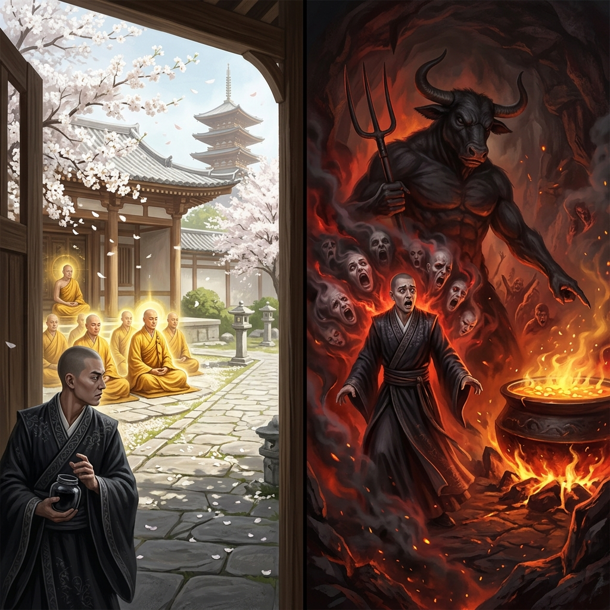
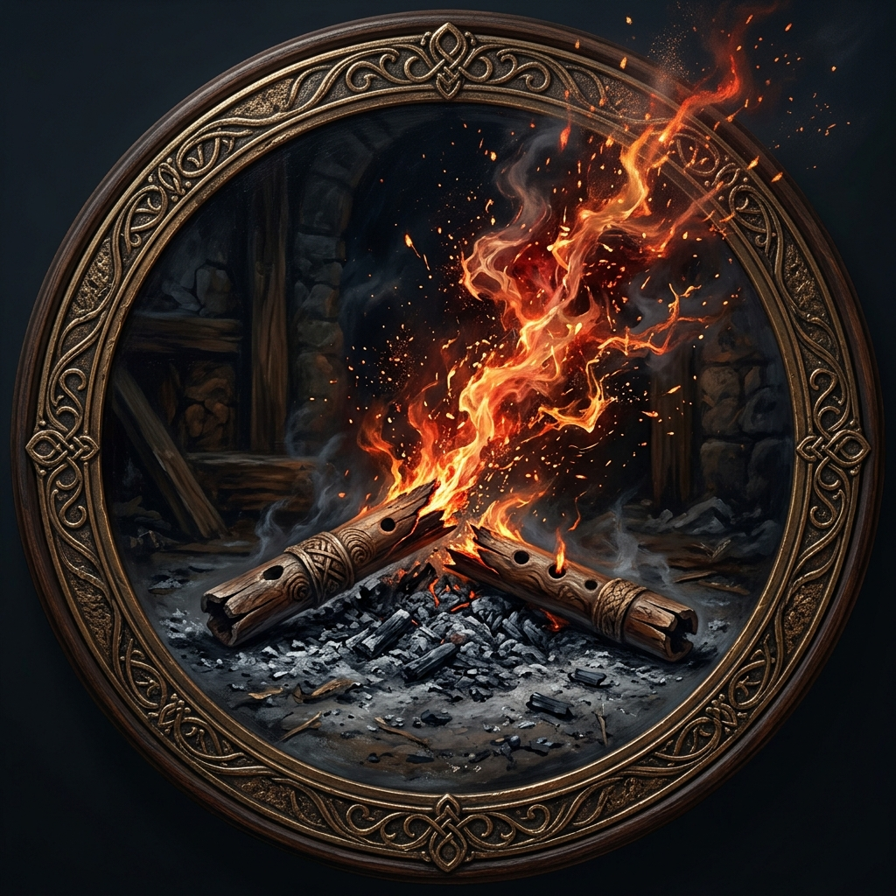
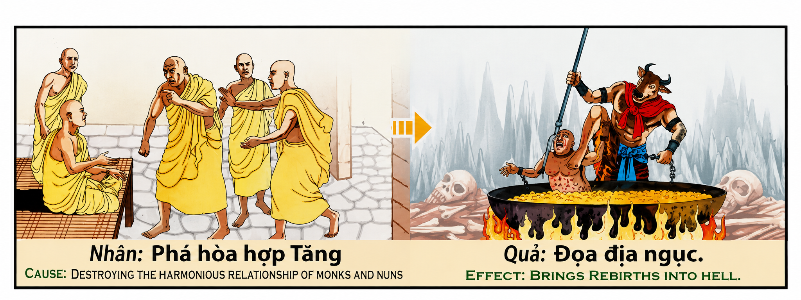

La Armonía Rota y el Eco del Abismo The Broken Harmony and the Echo of the Abyss L'armonia spezzata e l'eco dell'abisso 破碎的和谐与深渊的回声 الوئام المكسور وصدى الهاوية Нарушенная гармония и эхо бездны Die gebrochene Harmonie und das Echo des Abgrunds L'harmonie brisée et l'écho des abysses 壊れたハーモニーと深淵の響き A Harmonia Quebrada e o Eco do Abismo Sự Phá Vỡ Hòa Hợp Và Tiếng Vang Của Vực Thẳm
"Perturbar la paz de quienes buscan la pureza, sembrar la discordia en los santuarios de la mente y romper la armonía colectiva es encender un fuego de caos que consume tu propio espíritu. El karma no castiga desde el exterior; simplemente te entrega la cosecha de tu propia siembra. Quien destruye el faro de la paz en la tierra, camina a oscuras en un abismo mental de su propia creación, donde su mente se convierte en un caldero hirviente de su propia ira y agitación." "To disturb the peace of those seeking purity, to sow discord in the sanctuaries of the mind, and to shatter collective harmony is to ignite a fire of chaos that consumes your own spirit. Karma does not punish from without; it simply delivers the harvest of your own sowing. He who destroys the lighthouse of peace on earth walks in darkness in a mental abyss of his own creation, where his mind becomes a boiling cauldron of his own anger and turmoil." "Disturbare la pace di coloro che cercano la purezza, seminare discordia nei santuari della mente e rompere l'armonia collettiva, significa accendere un fuoco di caos che consuma il proprio spirito. Il karma non punisce dall'esterno; ti dà semplicemente il raccolto della tua stessa semina. Colui che distrugge il faro della pace sulla terra cammina nell'oscurità in un abisso mentale di sua creazione, dove la sua mente diventa un calderone bollente della sua stessa rabbia e tumulto." “扰乱那些追求纯洁的人的和平，在心灵的庇护所中散布不和，破坏集体的和谐，就是点燃混乱之火，吞噬你自己的精神。业力不会从外部惩罚；它只是给你自己播种的收获。摧毁地球上和平灯塔的人，在他自己创造的精神深渊中行走在黑暗中，在那里，他的思想变成了他自己的愤怒和骚乱的沸腾大锅。” "إن تعكير صفو السلام لأولئك الذين يسعون إلى النقاء، وزرع الشقاق في مقدسات العقل، وكسر الانسجام الجماعي هو إشعال نار الفوضى التي تستهلك روحك. إن الكارما لا تعاقب من الخارج؛ إنها ببساطة تعطيك حصاد زرعك الخاص. إن من يدمر منارة السلام على الأرض يمشي في الظلام في هاوية عقلية من خلقه، حيث يصبح عقله مرجلًا يغلي من غضبه واضطرابه." «Нарушать покой тех, кто ищет чистоты, сеять раздор в святилищах разума и нарушать коллективную гармонию — значит зажигать огонь хаоса, который поглощает ваш собственный дух. Карма не наказывает извне; она просто дает вам урожай вашего собственного посева. Тот, кто разрушает маяк мира на земле, ходит во тьме в ментальной бездне, созданной им самим, где его разум становится кипящим котлом его собственного гнева и смятения». „Den Frieden derer zu stören, die nach Reinheit streben, Zwietracht in den Heiligtümern des Geistes zu säen und die kollektive Harmonie zu brechen, bedeutet, ein Feuer des Chaos zu entzünden, das den eigenen Geist verzehrt. Karma bestraft nicht von außen; es gibt einem einfach die Ernte, die man selbst gesät hat. Wer das Leuchtfeuer des Friedens auf Erden zerstört, wandelt in der Dunkelheit in einem mentalen Abgrund, den er selbst geschaffen hat, wo sein Geist zu einem kochenden Kessel seiner eigenen Wut und seines Aufruhrs wird.“ « Triller la paix de ceux qui recherchent la pureté, semer la discorde dans les sanctuaires de l'esprit et briser l'harmonie collective, c'est allumer un feu de chaos qui consume votre propre esprit. Le karma ne punit pas de l'extérieur ; il vous donne simplement la récolte de vos propres semailles. Celui qui détruit le phare de la paix sur terre marche dans l'obscurité dans un abîme mental de sa propre création, où son esprit devient un chaudron bouillant de sa propre colère et de son agitation. » 「純粋さを求める人々の平和を乱し、心の聖域に不和の種をまき、集団の調和を壊すことは、自分自身の精神を焼きつくす混沌の火を灯すことである。カルマは外から罰するのではなく、自分で蒔いた収穫をあなたに与えるだけである。地上の平和の灯台を破壊する者は、自ら創造した精神の深淵の暗闇の中を歩き、そこで彼の心は自らの怒りと混乱の沸騰する大釜となる。」 “Perturbar a paz daqueles que buscam a pureza, semear a discórdia nos santuários da mente e quebrar a harmonia coletiva é acender um fogo de caos que consome seu próprio espírito. "Phá vỡ sự thanh tịnh của những ai đang tìm kiếm sự thuần khiết, gieo rắc bất hòa trong thánh đường tâm trí và làm tan rã sự hòa hợp tập thể chính là nhen nhóm ngọn lửa hỗn loạn tự thiêu rụi linh hồn mình. Nghiệp quả không trừng phạt từ bên ngoài; nó chỉ đơn giản trao lại cho bạn mùa gặt từ chính hạt giống bạn gieo. Kẻ hủy diệt ngọn hải đăng của hòa bình trên thế gian sẽ phải bước đi trong bóng tối của vực thẳm tâm linh do chính mình tạo ra, nơi tâm trí trở thành một vạt dầu sôi sục bởi chính cơn giận dữ và bất an của họ."
Entre las leyes que rigen el equilibrio del cosmos, la protección de los espacios y comunidades consagrados a la paz espiritual es una de las más sagradas. Perturbar la armonía de quienes buscan la pureza —ya sean monjes en un monasterio, sabios en contemplación o almas reunidas en amor fraternal— no es una simple ofensa interpersonal. Es una transmutación de la luz en tinieblas, una ruptura del tejido sagrado que sostiene la elevación colectiva de la humanidad.
La primera dimensión de esta transmutación es psicológica: la destrucción del templo interno. Una comunidad espiritual actúa como un faro de conciencia pura en medio del oleaje caótico del egoísmo mundano. Quien introduce de forma proactiva rumores, chismes, envidias o mentiras para dividir a sus miembros, comete un acto de violencia contra la paz misma. Al desestabilizar la mente de los devotos, la mente del saboteador se sintoniza con una vibración de absoluta discordia. Las sospechas y rencores que siembra en otros echan raíces en su propio espíritu, transformando su paz interior en un desierto de desconfianza y ansiedad perpetua.
La segunda dimensión es energética y resonante: el principio de amplificación kármica. En el gran orden metafísico, el peso del karma es directamente proporcional al bienestar colectivo que destruye. Perturbar la paz de quienes dedican su vida a irradiar amor y sabiduría equivale a envenenar el único pozo de agua pura en un desierto. Al apagar ese faro de esperanza para los afligidos, el infractor asume una deuda cósmica inmensa. Por la ley de correspondencia, al privar de refugio espiritual a las almas sedientas, su propia alma queda excluida de la providencia protectora del universo, hundiéndose en una absoluta soledad espiritual.
La tercera dimensión es la auto-proyección del tormento mental, tradicionalmente descrita como el "descenso al infierno". La ciencia del karma enseña que el infierno no es un lugar físico de castigo externo, sino un estado energético autoinducido de máxima densidad y sufrimiento. El caldero hirviente y las figuras terroríficas del abismo son la manifestación exterior del estado interior del alma. Al haber quemado la armonía y haber alimentado el fuego de la división, la conciencia de la persona queda atrapada en el caldero hirviente de su propia agitación mental. Renace en un estado de tormento mental absoluto, donde los ecos de sus propios chismes y acusaciones gritan en su cabeza, impidiéndole conocer el reposo o la paz.
Among the laws governing the balance of the cosmos, protecting spaces and communities consecrated to spiritual peace is one of the most sacred. Disturbing the harmony of those seeking purity—be they monks in a monastery, sages in contemplation, or souls gathered in brotherly love—is not a simple interpersonal offense. It is a transmutation of light into darkness, a tear in the sacred fabric supporting the collective elevation of humanity.
The first dimension of this transmutation is psychological: the destruction of the inner temple. A spiritual community acts as a lighthouse of pure consciousness amidst the chaotic waves of worldly selfishness. He who proactively introduces rumors, gossip, jealousy, or lies to divide its members commits an act of violence against peace itself. By destabilizing the minds of devotees, the saboteur's mind tunes into a vibration of absolute discord. The suspicions and resentments they sow in others take root in their own spirit, transforming their inner peace into a desert of distrust and perpetual anxiety.
The second dimension is energetic and resonant: the principle of karmic amplification. In the great metaphysical order, the weight of karma is directly proportional to the collective well-being it destroys. Disturbing the peace of those who dedicate their lives to radiating love and wisdom is equivalent to poisoning the only well of pure water in a desert. By extinguishing that lighthouse of hope for the afflicted, the offender assumes an immense cosmic debt. By the law of correspondence, by depriving thirsty souls of spiritual refuge, their own soul is excluded from the protective providence of the universe, sinking into absolute spiritual loneliness.
The third dimension is the self-projection of mental torment, traditionally described as the "descent into hell". The science of karma teaches that hell is not a physical place of external punishment, but a self-induced energetic state of maximum density and suffering. The boiling cauldron and the terrifying figures of the abyss are the outer manifestation of the soul's inner state. Having burned harmony and fed the fire of division, the person's consciousness becomes trapped in the boiling cauldron of their own mental agitation. They are reborn in a state of absolute mental torment, where the echoes of their own gossip and accusations scream in their head, preventing them from knowing rest or peace.
Tra le leggi che governano l'equilibrio del cosmo, la tutela degli spazi e delle comunità consacrate alla pace spirituale è una delle più sacre. Disturbare l’armonia di coloro che cercano la purezza – siano essi monaci in un monastero, saggi in contemplazione o anime riunite nell’amore fraterno – non è una semplice offesa interpersonale. È una trasmutazione della luce nell'oscurità, una rottura del tessuto sacro che sostiene l'elevazione collettiva dell'umanità.
La prima dimensione di questa trasmutazione è psicologica: la distruzione del tempio interno. Una comunità spirituale agisce come un faro di pura coscienza in mezzo all’ondata caotica dell’egoismo mondano. Chiunque introduca in modo proattivo voci, pettegolezzi, invidie o menzogne per dividere i suoi membri commette un atto di violenza contro la pace stessa. Destabilizzando la mente dei devoti, la mente del sabotatore si sintonizza con una vibrazione di assoluta discordanza. I sospetti e i risentimenti che semina negli altri mettono radici nel suo spirito, trasformando la sua pace interiore in un deserto di sfiducia e ansia perpetua.
La seconda dimensione è energetica e risonante: il principio dell'amplificazione karmica. Nel grande ordine metafisico, il peso del karma è direttamente proporzionale al benessere collettivo che distrugge. Disturbare la pace di coloro che dedicano la propria vita a irradiare amore e saggezza equivale ad avvelenare l'unico pozzo d'acqua pura in un deserto. Spegnendo quel faro di speranza per gli afflitti, l’autore del reato si assume un immenso debito cosmico. Per la legge della corrispondenza, privando le anime assetate del rifugio spirituale, la loro stessa anima viene esclusa dalla provvidenza protettiva dell'universo, sprofondando nell'assoluta solitudine spirituale.
La terza dimensione è l'autoproiezione del tormento mentale, tradizionalmente descritta come la "discesa agli inferi". La scienza del karma insegna che l'inferno non è un luogo fisico di punizione esterna, ma piuttosto uno stato energetico autoindotto di massima densità e sofferenza. Il calderone bollente e le terrificanti figure dell'abisso sono la manifestazione esterna dello stato interno dell'anima. Avendo bruciato l'armonia e alimentato il fuoco della divisione, la coscienza della persona rimane intrappolata nel calderone bollente del proprio tumulto mentale. Rinasce in uno stato di assoluto tormento mentale, dove gli echi dei suoi stessi pettegolezzi e accuse urlano nella sua testa, impedendogli di conoscere riposo o pace.
在管理宇宙平衡的法则中，保护致力于精神和平的空间和社区是最神圣的法则之一。扰乱那些追求纯洁的人的和谐——无论是寺院中的僧人、沉思中的圣人，还是兄弟之爱中聚集的灵魂——并不是简单的人际冒犯。这是光明向黑暗的转变，是维持人类集体提升的神圣结构的破裂。
这种转变的第一个维度是心理上的：内部神庙的毁灭。在世俗自私的混乱膨胀中，精神团体充当着纯粹意识的灯塔。任何人主动散布谣言、八卦、嫉妒或谎言来分裂其成员，就是对和平本身的暴力行为。通过破坏奉献者思想的稳定，破坏者的思想就会适应绝对不和谐的振动。他在别人身上播下的怀疑和怨恨在他自己的精神中扎根，把他内心的平静变成了不信任和永久焦虑的沙漠。
第二个维度是充满活力和共鸣：业力放大的原理。在伟大的形而上秩序中，业力的重量与其所破坏的集体福祉成正比。扰乱那些毕生奉献爱与智慧的人们的安宁，就等于给沙漠中唯一一口纯净水井投毒。通过熄灭受苦者的希望灯塔，犯罪者承担了巨大的宇宙债务。根据对应法则，通过剥夺干渴灵魂的精神庇护，他们自己的灵魂被排除在宇宙的保护之外，陷入绝对的精神孤独。
第三个维度是精神折磨的自我投射，传统上被描述为“堕入地狱”。业力科学告诉我们，地狱不是一个遭受外在惩罚的物理场所，而是一个自我诱发的最大密度和痛苦的能量状态。沸腾的大锅，恐怖的深渊身影，都是灵魂内在状态的外在表现。在燃烧了和谐并助长了分裂之火后，人的意识陷入了他自己精神混乱的沸腾大锅中。他在一种绝对的精神折磨中重生，他自己的流言蜚语和指控的回声在他的脑海中尖叫，使他无法休息或平静。
من بين القوانين التي تحكم توازن الكون، تعد حماية المساحات والمجتمعات المكرسة للسلام الروحي واحدة من أكثر القوانين قدسية. إن إزعاج الانسجام بين أولئك الذين يسعون إلى الطهارة - سواء كانوا رهبانًا في دير، أو حكماء في التأمل، أو أرواحًا مجتمعة في الحب الأخوي - ليس جريمة بسيطة بين الأشخاص. إنه تحويل النور إلى ظلام، وتمزق النسيج المقدس الذي يدعم الارتقاء الجماعي للإنسانية.
البعد الأول لهذا التحول هو نفسي: تدمير المعبد الداخلي. يعمل المجتمع الروحي كمنارة للوعي النقي وسط الفوضى الفوضوية للأنانية الدنيوية. ومن يقوم بشكل استباقي بنشر الشائعات أو القيل والقال أو الحسد أو الأكاذيب لتقسيم أعضائه يرتكب عملاً من أعمال العنف ضد السلام نفسه. من خلال زعزعة استقرار عقل المصلين، يصبح عقل المخرب متناغمًا مع اهتزاز الخلاف المطلق. إن الشكوك والاستياء الذي يزرعه في الآخرين يتجذر في روحه، ويحول سلامه الداخلي إلى صحراء من عدم الثقة والقلق الدائم.
البعد الثاني هو الحيوية والرنانة: مبدأ تضخيم الكارما. في النظام الميتافيزيقي العظيم، يتناسب وزن الكارما بشكل مباشر مع الرفاهية الجماعية التي تدمرها. إن إزعاج سلام أولئك الذين يكرسون حياتهم لإشعاع الحب والحكمة يعادل تسميم بئر الماء النقي الوحيد في الصحراء. ومن خلال إطفاء منارة الأمل تلك للمنكوبين، يتحمل الجاني دينًا كونيًا هائلاً. بموجب قانون المراسلات، من خلال حرمان النفوس العطشى من الملجأ الروحي، يتم استبعاد أرواحهم من العناية الإلهية الوقائية للكون، وتغرق في الوحدة الروحية المطلقة.
البعد الثالث هو الإسقاط الذاتي للعذاب العقلي، والذي يوصف تقليديًا بأنه "الانحدار إلى الجحيم". يعلمنا علم الكارما أن الجحيم ليس مكانًا ماديًا للعقاب الخارجي، بل هو حالة حيوية مستحثة ذاتيًا ذات أقصى قدر من الكثافة والمعاناة. إن المرجل المغلي وأشكال الهاوية المرعبة هي المظهر الخارجي للحالة الداخلية للروح. بعد أن أحرق الانسجام وأذكى نار الانقسام، أصبح وعي الشخص محاصرا في مرجل يغلي من اضطرابه العقلي. يولد من جديد في حالة من العذاب العقلي المطلق، حيث تصرخ أصداء ثرثرته واتهامه في رأسه، مما يمنعه من معرفة الراحة أو السلام.
Среди законов, управляющих балансом космоса, защита пространств и сообществ, посвященных духовному миру, является одним из самых священных. Нарушение гармонии тех, кто ищет чистоты, — будь то монахи в монастыре, мудрецы в созерцании или души, собравшиеся в братской любви, — это не просто межличностное оскорбление. Это превращение света во тьму, разрыв священной ткани, поддерживающей коллективное возвышение человечества.
Первое измерение этой трансмутации — психологическое: разрушение внутреннего храма. Духовное сообщество действует как маяк чистого сознания среди хаотичного наплыва мирского эгоизма. Тот, кто активно распространяет слухи, сплетни, зависть или ложь, чтобы разделить своих членов, совершает акт насилия против самого мира. Дестабилизируя ум преданных, ум саботажника настраивается на вибрацию абсолютного разлада. Подозрения и обиды, которые он сеет в других, укореняются в его собственном духе, превращая его внутренний мир в пустыню недоверия и постоянной тревоги.
Второе измерение — энергетическое и резонансное: принцип кармического усиления. В великом метафизическом порядке вес кармы прямо пропорционален коллективному благополучию, которое она разрушает. Нарушить покой тех, кто посвятил свою жизнь излучению любви и мудрости, равносильно отравлению единственного колодца с чистой водой в пустыне. Погасив этот маяк надежды для страждущих, преступник берет на себя огромный космический долг. По закону соответствия, лишая жаждущие души духовного прибежища, их собственная душа исключается из-под защитного промысла вселенной, погружаясь в абсолютное духовное одиночество.
Третье измерение — это самопроекция душевных мучений, традиционно описываемая как «нисхождение в ад». Наука о карме учит, что ад — это не физическое место внешнего наказания, а, скорее, самоиндуцированное энергетическое состояние максимальной плотности и страдания. Кипящий котел и ужасающие фигуры бездны — внешнее проявление внутреннего состояния души. Сжег гармонию и разжег огонь разделения, сознание человека оказывается в ловушке кипящего котла собственных душевных смятений. Он возрождается в состоянии абсолютного душевного терзания, где в голове кричат отголоски его собственных сплетен и обвинений, не давая ему познать ни покоя, ни покоя.
Unter den Gesetzen, die das Gleichgewicht des Kosmos regeln, ist der Schutz von Räumen und Gemeinschaften, die dem spirituellen Frieden gewidmet sind, eines der heiligsten. Die Störung der Harmonie derjenigen, die nach Reinheit streben – seien es Mönche in einem Kloster, Weise in Kontemplation oder in brüderlicher Liebe versammelte Seelen – ist kein einfaches zwischenmenschliches Vergehen. Es ist eine Umwandlung von Licht in Dunkelheit, ein Bruch des heiligen Gefüges, das die kollektive Erhebung der Menschheit aufrechterhält.
Die erste Dimension dieser Transmutation ist psychologischer Natur: die Zerstörung des inneren Tempels. Eine spirituelle Gemeinschaft fungiert als Leuchtfeuer reinen Bewusstseins inmitten der chaotischen Woge weltlichen Egoismus. Wer proaktiv Gerüchte, Klatsch, Neid oder Lügen verbreitet, um seine Mitglieder zu spalten, begeht einen Akt der Gewalt gegen den Frieden selbst. Durch die Destabilisierung des Geistes der Anhänger wird der Geist des Saboteurs auf eine Schwingung absoluter Zwietracht eingestellt. Das Misstrauen und die Ressentiments, die er in anderen sät, wurzeln in seinem eigenen Geist und verwandeln seinen inneren Frieden in eine Wüste des Misstrauens und der ständigen Angst.
Die zweite Dimension ist energetisch und resonant: das Prinzip der karmischen Verstärkung. In der großen metaphysischen Ordnung ist das Gewicht des Karmas direkt proportional zum kollektiven Wohlbefinden, das es zerstört. Den Frieden derjenigen zu stören, die ihr Leben der Ausstrahlung von Liebe und Weisheit widmen, ist gleichbedeutend mit der Vergiftung der einzigen Quelle mit reinem Wasser in einer Wüste. Indem der Täter diesen Hoffnungsträger für die Betroffenen auslöscht, übernimmt er eine immense kosmische Schuld. Durch das Gesetz der Korrespondenz wird die eigene Seele durch den Entzug der spirituellen Zuflucht von der schützenden Vorsehung des Universums ausgeschlossen und versinkt in absoluter spiritueller Einsamkeit.
Die dritte Dimension ist die Selbstdarstellung geistiger Qual, die traditionell als „Abstieg in die Hölle“ beschrieben wird. Die Wissenschaft des Karma lehrt, dass die Hölle kein physischer Ort äußerer Bestrafung ist, sondern vielmehr ein selbst herbeigeführter energetischer Zustand maximaler Dichte und Leidens. Der kochende Kessel und die schrecklichen Gestalten des Abgrunds sind die äußere Manifestation des inneren Zustands der Seele. Nachdem die Harmonie verbrannt und das Feuer der Spaltung angeheizt wurde, gerät das Bewusstsein des Menschen in den kochenden Kessel seines eigenen geistigen Aufruhrs. Er wird in einem Zustand absoluter seelischer Qual wiedergeboren, in dem die Echos seines eigenen Klatsches und seiner Anschuldigungen in seinem Kopf kreischen und ihn daran hindern, Ruhe und Frieden zu finden.
Parmi les lois qui régissent l'équilibre du cosmos, la protection des espaces et des communautés consacrées à la paix spirituelle est l'une des plus sacrées. Perturber l’harmonie de ceux qui recherchent la pureté – qu’il s’agisse de moines dans un monastère, de sages en contemplation ou d’âmes rassemblées dans un amour fraternel – n’est pas une simple offense interpersonnelle. C'est une transmutation de la lumière en ténèbres, une rupture du tissu sacré qui soutient l'élévation collective de l'humanité.
La première dimension de cette transmutation est psychologique : la destruction du temple interne. Une communauté spirituelle agit comme un phare de conscience pure au milieu de la houle chaotique de l’égoïsme mondain. Quiconque introduit de manière proactive des rumeurs, des commérages, de l'envie ou des mensonges pour diviser ses membres commet un acte de violence contre la paix elle-même. En déstabilisant l’esprit des fidèles, l’esprit du saboteur s’accorde à une vibration de discorde absolue. Les soupçons et les ressentiments qu'il sème chez les autres s'enracinent dans son propre esprit, transformant sa paix intérieure en un désert de méfiance et d'anxiété perpétuelle.
La deuxième dimension est énergétique et résonante : le principe d'amplification karmique. Dans le grand ordre métaphysique, le poids du karma est directement proportionnel au bien-être collectif qu’il détruit. Perturber la paix de ceux qui consacrent leur vie à rayonner d’amour et de sagesse équivaut à empoisonner le seul puits d’eau pure dans un désert. En éteignant cette lueur d’espoir pour les affligés, le délinquant assume une immense dette cosmique. Par la loi de la correspondance, en privant les âmes assoiffées de refuge spirituel, leur propre âme est exclue de la providence protectrice de l'univers, s'enfonçant dans une solitude spirituelle absolue.
La troisième dimension est l'auto-projection de tourments mentaux, traditionnellement décrite comme la « descente aux enfers ». La science du karma enseigne que l’enfer n’est pas un lieu physique de punition extérieure, mais plutôt un état énergétique auto-induit de densité et de souffrance maximales. Le chaudron bouillant et les figures terrifiantes de l’abîme sont la manifestation extérieure de l’état intérieur de l’âme. Après avoir brûlé l'harmonie et alimenté le feu de la division, la conscience de la personne se retrouve piégée dans le chaudron bouillant de sa propre tourmente mentale. Il renaît dans un état de tourment mental absolu, où les échos de ses propres ragots et accusations hurlent dans sa tête, l'empêchant de connaître le repos ou la paix.
宇宙のバランスを管理する法則の中で、精神的な平和に捧げられた空間とコミュニティの保護は、最も神聖なものの 1 つです。修道院の修道士であれ、瞑想中の聖者であれ、兄弟愛に集まった魂であれ、純粋さを求める人々の調和を乱すことは、単純な対人犯罪ではありません。それは光から闇への変容であり、人類の集合的な向上を支える神聖な構造の断裂です。
この変容の最初の側面は心理的なものであり、内部神殿の破壊です。スピリチュアルなコミュニティは、世俗的な利己主義の混沌としたうねりの中で、純粋な意識の灯台として機能します。メンバーを分裂させるために、噂、ゴシップ、羨望、または嘘を積極的に持ち込む者は、平和そのものに対する暴力行為を犯していることになります。信者の精神を不安定にすることによって、妨害者の精神は絶対的な不調和の振動に同調することになります。彼が他人に蒔いた疑惑や憤りは彼自身の精神に根を張り、彼の心の平和を不信と絶え間ない不安の砂漠に変えます。
2 番目の次元はエネルギーと共鳴、 カルマ増幅の原理です。偉大な形而上学的秩序では、カルマの重みは、それが破壊する集団の幸福に直接比例します。愛と知恵を放射することに人生を捧げている人々の平和を乱すことは、砂漠にある唯一の純粋な水の井戸に毒を入れるのと同じです。苦しんでいる人々の希望の光を消すことによって、犯罪者は宇宙規模の莫大な負債を負うことになります。対応の法則により、渇いた魂から精神的な避難所を奪われることによって、彼ら自身の魂は宇宙の保護摂理から排除され、絶対的な精神的な孤独に沈んでしまいます。
3 番目の次元は精神的苦痛の自己投影であり、伝統的に「地獄への降下」と表現されています。カルマの科学は、地獄は外部からの罰が与えられる物理的な場所ではなく、むしろ自ら誘発する最大密度と苦しみのエネルギー状態であると教えています。沸騰する大釜と深淵の恐ろしい姿は、魂の内部状態が外部に現れたものです。調和を燃やし、分裂の火を煽った人の意識は、自らの精神的混乱という沸騰する大釜の中に閉じ込められてしまいます。彼は絶対的な精神的苦痛の状態で生まれ変わり、そこでは自分自身のゴシップや告発の反響が頭の中で叫び、休息や平安を知ることができなくなります。
Entre as leis que regem o equilíbrio do cosmos, a proteção dos espaços e comunidades consagrados à paz espiritual é uma das mais sagradas. Perturbar a harmonia daqueles que buscam a pureza – sejam monges em um mosteiro, sábios em contemplação ou almas reunidas em amor fraternal – não é uma simples ofensa interpessoal. É uma transmutação da luz em trevas, uma ruptura do tecido sagrado que sustenta a elevação colectiva da humanidade.
A primeira dimensão desta transmutação é psicológica: a destruição do templo interno. Uma comunidade espiritual atua como um farol de consciência pura em meio à onda caótica do egoísmo mundano. Quem introduz proativamente boatos, fofocas, inveja ou mentiras para dividir os seus membros comete um ato de violência contra a própria paz. Ao desestabilizar a mente dos devotos, a mente do sabotador fica sintonizada com uma vibração de discórdia absoluta. As suspeitas e ressentimentos que semeia nos outros enraízam-se no seu próprio espírito, transformando a sua paz interior num deserto de desconfiança e ansiedade perpétua.
A segunda dimensão é energética e ressonante: o princípio da amplificação cármica. Na grande ordem metafísica, o peso do carma é diretamente proporcional ao bem-estar coletivo que destrói. Perturbar a paz de quem dedica a vida a irradiar amor e sabedoria equivale a envenenar o único poço de água pura de um deserto. Ao extinguir esse farol de esperança para os aflitos, o ofensor assume uma imensa dívida cósmica. Pela lei da correspondência, ao privar as almas sedentas do refúgio espiritual, a sua própria alma é excluída da providência protetora do universo, afundando-se na absoluta solidão espiritual.
A terceira dimensão é a autoprojeção do tormento mental, tradicionalmente descrita como a “descida ao inferno”. A ciência do carma ensina que o inferno não é um lugar físico de punição externa, mas sim um estado energético auto-induzido de máxima densidade e sofrimento. O caldeirão fervente e as figuras aterrorizantes do abismo são a manifestação externa do estado interno da alma. Tendo queimado a harmonia e alimentado o fogo da divisão, a consciência da pessoa fica presa no caldeirão fervente de sua própria turbulência mental. Ele renasce em estado de absoluto tormento mental, onde os ecos de suas próprias fofocas e acusações gritam em sua cabeça, impedindo-o de conhecer o descanso ou a paz.
Trong số những quy luật duy trì sự cân bằng của vũ trụ, việc bảo vệ các không gian và cộng đồng đã hiến dâng cho nền hòa bình tâm linh là một trong những điều thiêng liêng nhất. Phá vỡ sự hòa hợp của những ai đang tìm kiếm sự thuần khiết — dù họ là tăng ni trong tu viện, hiền triết trong lúc thiền định, hay các linh hồn quần tụ trong tình anh em đồng đạo — không đơn giản là sự xúc phạm cá nhân thông thường. Đó là một sự biến chuyển ánh sáng thành bóng tối, một vết rách sâu sắc trong tấm vải thiêng nâng đỡ sự tiến hóa tâm thức chung của nhân loại.
Chiều kích thứ nhất của sự biến chuyển này là tâm lý: sự hủy diệt ngôi đền nội tâm. Một cộng đồng tâm linh đóng vai trò như ngọn hải đăng của tâm thức thuần khiết giữa những ngọn sóng hỗn loạn của lòng ích kỷ thế gian. Kẻ chủ động gieo rắc tin đồn, châm chọc, đố kỵ hay dối trá để chia rẽ các thành viên chính là đang thực hiện hành vi bạo lực chống lại chính hòa bình. Bằng việc làm lung lay tâm trí của người tu hành, tâm trí của kẻ phá hoại tự đồng điệu với tần số hỗn loạn tuyệt đối. Những nghi ngờ và oán hận họ gieo rắc vào người khác sẽ bén rễ sâu trong chính linh hồn họ, biến hòa bình nội tâm của họ thành một hoang mạc của sự ngờ vực và lo âu vĩnh viễn.
Chiều kích thứ hai là năng lượng và sự cộng hưởng: nguyên lý khuếch đại nghiệp quả. Trong trật tự siêu hình vĩ đại, sức nặng của nghiệp tỷ lệ thuận với phúc lợi tập thể mà nó hủy hoại. Phá vỡ sự yên bình của những người hiến dâng cuộc đời để lan tỏa tình yêu và trí tuệ tương đương với việc đầu độc giếng nước ngọt duy nhất giữa sa mạc. Khi dập tắt ngọn hải đăng hy vọng của những người đau khổ, kẻ vi phạm phải gánh một món nợ vũ trụ khổng lồ. Theo luật tương ứng, bằng cách tước đi nơi trú ẩn tâm linh của những linh hồn khát khao, chính linh hồn của họ sẽ bị loại trừ khỏi sự chở che của thiên ý, chìm sâu vào sự cô độc tâm linh tuyệt đối.
Chiều kích thứ ba là sự tự chiếu rọi của torment tâm trí, vốn được mô tả theo truyền thống là "đọa địa ngục". Khoa học nghiệp quả dạy rằng địa ngục không phải là một nơi chốn vật lý chứa đựng sự trừng phạt từ bên ngoài, mà là một trạng thái năng lượng tự kích hoạt có mật độ dày đặc và đau khổ tột cùng. Vạt dầu sôi sục và những hình bóng đáng sợ dưới vực thẳm chính là biểu hiện bên ngoài của trạng thái bên trong linh hồn. Do đã thiêu rụi sự hòa hợp và nuôi dưỡng ngọn lửa chia rẽ, tâm thức của kẻ phá hoại bị giam cầm trong vạt dầu sôi của sự bất an cực độ. Họ tái sinh trong trạng thái đau khổ tâm trí tuyệt đối, nơi tiếng vang từ chính những lời châm chọc và cáo buộc của họ gào thét trong đầu, khiến họ không thể tìm thấy một giây phút nghỉ ngơi hay bình yên.
La Flauta Rota y el Santuario del Silencio
The Broken Flute and the Sanctuary of Silence
Il flauto spezzato e il Santuario del Silenzio
断笛与寂静神殿
الناي المكسور وضريح الصمت
Сломанная флейта и Храм молчания
Die zerbrochene Flöte und das Heiligtum der Stille
La Flûte Brisée et le Sanctuaire du Silence
壊れたフルートと沈黙の神殿
A Flauta Quebrada e o Santuário do Silêncio
Khúc Tiêu Gãy Và Thánh Đường Của Sự Tĩnh Lặng
En las tierras altas del Valle de la Neblina Blanca, donde el cielo parecía tocar las cumbres nevadas, se encontraba el monasterio del Silencio Sagrado. En ese lugar, un grupo de monjes dedicaba sus lives al cultivo del amor compasivo y a la oración silenciosa. El silencio del monasterio era tan denso, puro y sanador que cualquier viajero fatigado, enfermo o afligido que cruzaba el umbral del valle sentía que sus pesares se disolvían en el aire, encontrando una paz instantánea que les devolvía las ganas de vivir. El monasterio era el faro de luz y sanación para todos los pueblos de la comarca.
En la ciudad del llano vivía Kiran, un erudito de renombre cuya inteligencia solo era superada por su inmensa soberbia. Kiran era experto en debates, retórica y teología, y creía que la grandeza humana residía únicamente en ganar discusiones y demostrar superioridad intelectual. No podía soportar que los monjes del monasterio, con su simple silencio y humildad, atrajeran a tantos devotos y fueran tan amados. «Ese silencio es pereza e ignorancia vestida de santidad», repetía con desprecio. Consumido por una envidia secreta, Kiran decidió subir al monasterio no para aprender, sino con el firme propósito de demostrar la fragilidad de su paz y destruir su perfecta armonía.
Kiran entró al santuario con paso suave y una sonrisa astuta. Durante semanas, se dedicó a ganarse la confianza de los monjes, estudiando sus caracteres. Luego, comenzó a sembrar discretamente la cizaña. Al joven monje encargado del jardín le susurró que el maestro despreciaba su trabajo y prefería las oraciones de su compañero. Al cocinero le confió que los demás monjes se quejaban de sus alimentos en secreto. Provocó debates teológicos sutiles pero llenos de veneno intelectual, forzando a los monjes a tomar partido y a defender su orgullo personal. Muy pronto, el aire puro del monasterio se volvió espeso y pesado. El silencio sagrado fue sustituido por voces airadas, discusiones ásperas y miradas cargadas de desconfianza y recelo. Los monjes, con las mentes agitadas, ya no podían meditar en paz, y el faro de sanación se apagó. Un campesino que llegó al valle buscando consuelo por la pérdida de su hija solo encontró gritos y reproches, regresando a su hogar sumido en una desesperanza absoluta.
Satisfecho con su astuta hazaña, Kiran descendió de la montaña celebrando su supuesta victoria intelectual. «He demostrado que su paz es una mentira», pensó con arrogancia. Sin embargo, a mitad del camino, Kiran sintió una extraña presión en sus oídos. Al intentar escuchar el canto de los pájaros o el murmullo del viento entre los pinos, no pudo oír nada más que un ruido ensordecedor de voces gritando, acusaciones cruzadas y discusiones caóticas en el interior de su propia cabeza. Era el eco exacto de la discordia que él mismo había sembrado en el santuario espiritual.
Los meses y los años pasaron, y Kiran descubrió que el silencio lo había abandonado para siempre. Incapaz de concentrarse, de leer o de conciliar el sueño, su mente se convirtió en un caldero hirviente de pensamientos caóticos, pesadillas y gritos de desesperación. Su cuerpo empezó a enfermar, carcomido por la agitación mental constante. Vivía en un infierno absoluto y autoinfligido, donde su propia conciencia lo devoraba segundo a segundo, sin que toda su riqueza o su inteligencia pudieran aliviar su tormento. Comprendió, con horror, que el caldero hirviente de su mente era el resultado inevitable de haber destruido la armonía de la paz.
Envejecido y roto por el sufrimiento, Kiran subió una vez más el sendero de la montaña, arrastrándose hasta las puertas del monasterio del Silencio Sagrado. Al cruzar el umbral, vio que los monjes, tras años de paciente purificación, habían reconstruido su silencio y su armonía. Kiran cayó de rodillas ante el anciano maestro, llorando lágrimas de profunda redención que lavaban su antiguo orgullo, y suplicó: «Maestro... he vivido en un infierno de voces y fuego mental desde el día en que dividí vuestro templo. He destruido vuestra armonía, y mi propia alma ha sido consumida por el caos. Por favor, castígame, pero devuélme el silencio». El maestro le miró con lágrimas de compasión infinita en sus ojos y le dijo suavemente: «Kiran, nosotros no te castigamos, ni el universo lo hace. Al romper la armonía de este santuario, rompiste el espejo en el que tu propio espíritu podía encontrar reposo. Destruiste el puente que unía tu alma con la paz divina. No hay más castigo que tu propia creación, Kiran. Pero el karma, que registra tu arrepentimiento, te ofrece hoy una pala. Si deseas reconstruir tu puente, debes comenzar limpiando las cenizas de tu orgullo en absoluto silencio». Kiran aceptó la tarea, y desde ese día sirvió al monasterio en el más humilde y pacífico de los silencios, lavando la entrada del templo mientras su mente, muy lentamente, volvía a escuchar la música del silencio sagrado.
In the highlands of the Valley of the White Mist, where the sky seemed to touch the snowy peaks, stood the monastery of Sacred Silence. In that place, a group of monks dedicated their lives to the cultivation of compassionate love and silent prayer. The silence of the monastery was so dense, pure, and healing that any weary, sick, or afflicted traveler who crossed the threshold of the valley felt their worries dissolve in the air, finding instant peace that restored their will to live. The monastery was the lighthouse of light and healing for all the villages of the region.
In the city of the plain lived Kiran, a renowned scholar whose intelligence was only surpassed by his immense pride. Kiran was an expert in debate, rhetoric, and theology, and believed that human greatness lay solely in winning arguments and demonstrating intellectual superiority. He could not stand that the monks of the monastery, with their simple silence and humility, attracted so many devotees and were so loved. 'That silence is laziness and ignorance dressed in holiness,' he repeated with contempt. Consumed by a secret envy, Kiran decided to go up to the monastery not to learn, but with the firm purpose of demonstrating the fragility of their peace and destroying their perfect harmony.
Kiran entered the sanctuary with soft steps and a cunning smile. For weeks, he dedicated himself to gaining the trust of the monks, studying their characters. Then, he began to discreetly sow discord. To the young monk in charge of the garden, he whispered that the master despised his work and preferred the prayers of his companion. To the cook, he confided that the other monks secretly complained about his food. He provoked subtle theological debates full of intellectual poison, forcing the monks to take sides and defend their personal pride. Very soon, the pure air of the monastery became thick and heavy. The sacred silence was replaced by angry voices, harsh arguments, and glances loaded with distrust and suspicion. The monks, with their agitated minds, could no longer meditate in peace, and the lighthouse of healing went out. A peasant who arrived in the valley seeking comfort for the loss of his daughter only found shouts and reproaches, returning to his home plunged into absolute despair.
Satisfied with his cunning feat, Kiran descended the mountain celebrating his supposed intellectual victory. 'I have shown that their peace is a lie,' he thought arrogantly. However, halfway down, Kiran felt a strange pressure in his ears. When trying to listen to the singing of the birds or the rustle of the wind through the pines, he could hear nothing but a deafening noise of screaming voices, crossed accusations, and chaotic discussions inside his own head. It was the exact echo of the discord he himself had sown in the spiritual sanctuary.
The months and years passed, and Kiran discovered that silence had left him forever. Unable to concentrate, read, or fall asleep, his mind became a boiling cauldron of chaotic thoughts, nightmares, and cries of despair. His body began to sicken, eaten away by constant mental agitation. He lived in an absolute, self-inflicted hell, where his own consciousness devoured him second by second, without all his wealth or intelligence being able to relieve his torment. He understood, with horror, that the boiling cauldron of his mind was the inevitable result of having destroyed the harmony of peace.
Aged and broken by suffering, Kiran once more climbed the mountain path, crawling to the doors of the monastery of Sacred Silence. Crossing the threshold, he saw that the monks, after years of patient purification, had rebuilt their silence and harmony. Kiran fell to his knees before the old master, crying tears of deep redemption that washed away his old pride, and pleaded: 'Master... I have lived in a hell of voices and mental fire since the day I divided your temple. I destroyed your harmony, and my own soul has been consumed by chaos. Please, punish me, but give me back the silence.' The master looked at him with tears of infinite compassion in his eyes and said softly: 'Kiran, we do not punish you, nor does the universe. By breaking the harmony of this sanctuary, you broke the mirror in which your own spirit could find rest. You destroyed the bridge that connected your soul with divine peace. There is no other punishment than your own creation, Kiran. But karma, which records your repentance, offers you a shovel today. If you wish to rebuild your bridge, you must begin by cleaning the ashes of your pride in absolute silence.' Kiran accepted the task, and from that day on served the monastery in the humblest and most peaceful of silences, sweeping the temple entrance while his mind, very slowly, returned to hear the music of sacred silence.
Negli altopiani della Valle della Nebbia Bianca, dove il cielo sembrava toccare le cime innevate, si trovava il monastero del Sacro Silenzio. In quel luogo, un gruppo di monaci dedicò la propria vita alla coltivazione dell'amore compassionevole e della preghiera silenziosa. Il silenzio del monastero era così denso, puro e curativo che ogni viaggiatore stanco, malato o afflitto che varcava la soglia della valle sentiva che i suoi dolori si dissolvevano nell'aria, trovando un'istantanea pace che riaccendeva la voglia di vivere. Il monastero era un faro di luce e di guarigione per tutti i paesi della regione.
Nella città della pianura viveva Kiran, un rinomato studioso la cui intelligenza era superata solo dalla sua immensa arroganza. Kiran era abile nel dibattito, nella retorica e nella teologia e credeva che la grandezza umana risiedesse esclusivamente nel vincere le discussioni e nel dimostrare la superiorità intellettuale. Non poteva sopportare che i monaci del monastero, con il loro semplice silenzio e umiltà, attirassero così tanti devoti e fossero così amati. «Quel silenzio è pigrizia e ignoranza vestita di santità», ripeteva con disprezzo. Consumato da una segreta invidia, Kiran decise di salire al monastero non per imparare, ma con la ferma intenzione di dimostrare la fragilità della sua pace e distruggerne la perfetta armonia.
Kiran entrò nel santuario con passo morbido e un sorriso sornione. Per settimane si dedicò a conquistare la fiducia dei monaci, studiandone i caratteri. Poi cominciò a seminare discretamente la zizzania. Sussurrò al giovane monaco addetto al giardino che il maestro disprezzava il suo lavoro e preferiva le preghiere del suo compagno. Confidò al cuoco che gli altri monaci si lamentavano segretamente del loro cibo. Provocò sottili dibattiti teologici pieni di veleno intellettuale, costringendo i monaci a schierarsi e a difendere il proprio orgoglio personale. Ben presto l'aria pura del monastero divenne densa e pesante. Il sacro silenzio fu sostituito da voci rabbiose, discussioni aspre e sguardi pieni di diffidenza e sospetto. I monaci, con la mente agitata, non potevano più meditare in pace e il faro curativo si spense. Un contadino giunto a valle in cerca di consolazione per la perdita della figlia trovò solo urla e rimproveri, tornando a casa immerso nella più assoluta disperazione.
Soddisfatto della sua astuta impresa, Kiran scese dalla montagna celebrando la sua presunta vittoria intellettuale. Ho dimostrato che la loro pace è una menzogna, pensò con arroganza. Tuttavia, a metà strada, Kiran sentì una strana pressione sulle orecchie. Cercando di ascoltare il cinguettio degli uccelli o il fruscio del vento tra i pini, non riusciva a sentire altro che un rumore assordante di voci urlanti, accuse scambiate e discussioni caotiche nella sua testa. Era l'eco esatta della discordia che lui stesso aveva seminato nel santuario spirituale.
Passarono i mesi e gli anni, e Kiran scoprì che il silenzio lo aveva abbandonato per sempre. Incapace di concentrarsi, leggere o addormentarsi, la sua mente divenne un calderone ribollente di pensieri caotici, incubi e grida di disperazione. Il suo corpo cominciò ad ammalarsi, divorato dal costante tumulto mentale. Viveva in un inferno assoluto e autoinflitto, dove la sua stessa coscienza lo divorava secondo dopo secondo, senza che tutta la sua ricchezza e la sua intelligenza potessero alleviare il suo tormento. Si rese conto, con orrore, che il calderone ribollente della sua mente era l'inevitabile risultato dell'aver distrutto l'armonia della pace.
Invecchiato e distrutto dalla sofferenza, Kiran risalì ancora una volta il sentiero di montagna, strisciando fino ai cancelli del monastero del Sacro Silenzio. Varcata la soglia, vide che i monaci, dopo anni di paziente purificazione, avevano ricostruito il loro silenzio e la loro armonia. Kiran cadde in ginocchio davanti al vecchio maestro, piangendo lacrime di profonda redenzione che lavarono via il suo antico orgoglio, e implorò: "Maestro... ho vissuto in un inferno di voci e fuoco mentale dal giorno in cui ho diviso il tuo tempio. Ho distrutto la tua armonia e la mia anima è stata consumata dal caos. Per favore puniscimi, ma ridammi il silenzio. Il maestro lo guardò con lacrime di infinita compassione negli occhi e disse dolcemente: "Kiran, noi non ti puniamo, né lo fa l'universo. Rompendo l'armonia di questo santuario, hai rotto lo specchio in cui il tuo spirito poteva trovare riposo. Hai distrutto il ponte che univa la tua anima alla pace divina. Non c'è punizione diversa dalla tua stessa creazione, Kiran. Ma il karma, che registra il tuo rimpianto, oggi ti offre una pala. Se desideri ricostruire il tuo ponte, devi iniziare pulendo le ceneri del tuo orgoglio in assoluto silenzio. Kiran accettò l'incarico, e da quel giorno servì il monastero nel più umile e pacifico dei silenzi, lavando l'ingresso del tempio mentre la sua mente, molto lentamente, tornava ad ascoltare la musica del sacro silenzio.
白雾谷高地，天空与雪峰相触的地方，有一座神圣寂静修道院。在那里，一群僧人毕生致力于修行慈悲心和静默祈祷。修道院的寂静是如此浓郁、纯净和治愈，任何疲惫、生病或痛苦的旅行者跨过山谷的门槛时都会感到他们的悲伤消散在空气中，找到了瞬间的平静，恢复了他们对生活的渴望。这座修道院是该地区所有城镇的光明和治愈的灯塔。
平原之城里住着基兰，他是一位著名的学者，他的智慧只被他巨大的傲慢所超越。基兰擅长辩论、修辞学和神学，并相信人类的伟大仅仅在于赢得争论和展示智力优势。他无法忍受寺里的僧人以他们朴素的沉默和谦逊，吸引了这么多的信徒，受到如此多的爱戴。 “这种沉默是披着神圣外衣的懒惰和无知，”他轻蔑地重复道。出于内心的嫉妒，基兰决定去修道院不是为了学习，而是为了展示其和平的脆弱性并破坏其完美的和谐。
基兰迈着轻柔的步伐，带着狡黠的微笑走进了圣所。几周来，他致力于赢得僧侣的信任，研究他们的性格。然后他开始小心翼翼地播种稗子。他低声对负责花园的年轻僧侣说，大师鄙视他的工作，更喜欢他同伴的祈祷。他向厨师吐露，其他僧人暗自抱怨他们的食物。它引发了充满知识分子毒液的微妙神学辩论，迫使僧侣们选边站队并捍卫他们的个人尊严。很快，寺院里的纯净空气就变得粘稠起来。神圣的沉默被愤怒的声音、严厉的议论和充满不信任和怀疑的眼神所取代。僧人心烦意乱，再也无法静心冥想，疗愈灯熄灭了。一位农民因失去女儿而来到山谷寻求安慰，却听到的只是尖叫声和责备声，回到家后陷入了绝对的绝望。
基兰对自己的狡猾壮举感到满意，下山庆祝他所谓的智力胜利。我已经证明他们的和平是谎言，他傲慢地想。然而，走到一半的时候，基兰就感觉到耳朵里有一股奇怪的压力。他试图聆听鸟儿的鸣叫声或风吹过松树的沙沙声，但除了他自己头脑中震耳欲聋的喊叫声、互相指责和混乱的争论之外，什么也听不到。这正是他自己在精神圣殿中播下的不和的回声。
几个月又几年过去了，基兰发现沉默已经永远离开了他。他无法集中注意力、阅读或入睡，他的大脑变成了一个沸腾的大锅，充满了混乱的想法、噩梦和绝望的呼喊。他的身体开始生病，被持续不断的精神混乱所吞噬。他生活在一个绝对的、自作自受的地狱里，他自己的良心一分一秒地吞噬着他，他所有的财富和智慧都无法减轻他的痛苦。他惊恐地意识到，他内心沸腾的大锅是破坏了和平的和谐的必然结果。
基兰年老体弱，饱经磨难，他再次爬上山路，爬到了神圣寂静修道院的大门前。跨过门槛，他看到僧侣们经过多年的耐心净化，重新恢复了宁静与和谐。基兰跪倒在老师傅面前，流下深深救赎的泪水，洗去了他昔日的骄傲，哀求道：“师父……自从分割您的神殿那天起，我就生活在声音和精神之火的地狱之中。我破坏了您的和谐，我自己的灵魂也被混乱所吞噬。请惩罚我，但请还我沉默。老师看着他，眼中充满了无限慈悲的泪水，轻声说道：“基兰，我们不惩罚您，宇宙也不惩罚您。通过破坏这个圣所的和谐，你打破了你自己的灵魂可以安息的镜子。你摧毁了将你的灵魂与神圣的和平联系在一起的桥梁。除了你自己的创造之外，没有任何惩罚，基兰。但记录你遗憾的业力今天为你提供了一把铲子。如果你想重建你的桥梁，你必须首先在绝对的沉默中清理你骄傲的灰烬。基兰接受了这项任务，从那天起，他以最卑微、最平静的沉默为修道院服务，清洗寺庙的入口，而他的思绪却非常缓慢地回到聆听神圣寂静的音乐。
في مرتفعات وادي الضباب الأبيض، حيث بدت السماء وكأنها تلامس القمم الثلجية، كان يوجد دير الصمت المقدس. وفي ذلك المكان، كرّس مجموعة من الرهبان حياتهم لتنمية المحبة الرحيمة والصلاة الصامتة. كان صمت الدير كثيفًا ونقيًا وشفاءً، لدرجة أن أي مسافر متعب أو مريض أو مبتلى يعبر عتبة الوادي يشعر بأن أحزانه تتلاشى في الهواء، ويجد سلامًا فوريًا يعيد له الرغبة في الحياة. وكان الدير منارة النور والشفاء لكل مدن المنطقة.
في مدينة السهل عاش كيران، عالم مشهور لا يفوق ذكاؤه إلا غطرسته الهائلة. كان كيران ماهرًا في المناظرة والبلاغة واللاهوت، وكان يعتقد أن عظمة الإنسان تكمن فقط في الفوز بالحجج وإظهار التفوق الفكري. لم يستطع أن يتحمل أن رهبان الدير، بصمتهم وتواضعهم البسيط، اجتذبوا الكثير من المريدين وكانوا محبوبين للغاية. وكرر بازدراء: "هذا الصمت هو الكسل والجهل الملبس بالقداسة". قرر كيران، الذي استحوذ عليه حسد سري، أن يصعد إلى الدير لا ليتعلم، بل بنية حازمة لإظهار هشاشة سلامه وتدمير انسجامه التام.
دخلت كيران الحرم بخطوة ناعمة وابتسامة ماكرة. وقد كرس نفسه لأسابيع لكسب ثقة الرهبان ودراسة أخلاقهم. ثم بدأ يزرع الزوان سراً. وهمس للراهب الشاب المسؤول عن البستان أن السيد يحتقر عمله ويفضل صلاة رفيقه. وأسر للطباخ أن الرهبان الآخرين اشتكوا سراً من طعامهم. لقد أثارت مناقشات لاهوتية خفية مليئة بالسم الفكري، مما أجبر الرهبان على الانحياز والدفاع عن كبريائهم الشخصي. وسرعان ما أصبح هواء الدير النقي كثيفًا وثقيلًا. وحلت محل الصمت المقدس أصوات غاضبة ونقاشات قاسية ونظرات مليئة بعدم الثقة والشك. واضطربت عقول الرهبان، ولم يعد بإمكانهم التأمل بسلام، فانطفأت منارة الشفاء. المزارع الذي جاء إلى الوادي بحثًا عن العزاء في فقدان ابنته لم يجد سوى الصراخ واللوم، فعاد إلى منزله غارقًا في اليأس المطلق.
راضيًا عن إنجازه الماكر، نزل كيران الجبل احتفالًا بانتصاره الفكري المفترض. لقد أثبت أن سلامهم كذبة، فكر بغطرسة. ومع ذلك، في منتصف الطريق، شعرت كيران بضغط غريب على أذنيها. وهو يحاول الاستماع إلى زقزقة العصافير أو حفيف الريح في أشجار الصنوبر، فلم يكن يسمع سوى ضجيج يصم الآذان من أصوات الصراخ، والاتهامات المتبادلة، والحجج الفوضوية داخل رأسه. لقد كان هذا هو الصدى الدقيق للخلاف الذي زرعه هو نفسه في الحرم الروحي.
مرت الأشهر والسنوات، واكتشف كيران أن الصمت قد فارقه إلى الأبد. أصبح عقله، غير قادر على التركيز أو القراءة أو النوم، مرجلاً يغلي من الأفكار الفوضوية والكوابيس وصرخات اليأس. بدأ جسده يمرض، ويأكله الاضطراب العقلي المستمر. لقد عاش في جحيم مطلق، ألحقه بنفسه، حيث كان ضميره يلتهمه ثانيةً بثانية، دون أن يتمكن كل ثروته أو ذكائه من تخفيف عذابه. لقد أدرك برعب أن مرجل عقله المغلي كان النتيجة الحتمية لتدمير انسجام السلام.
تقدم كيران في السن وكسرته المعاناة، فتسلق الممر الجبلي مرة أخرى، زاحفًا إلى أبواب دير الصمت المقدس. ولما عبر العتبة رأى الرهبان، بعد سنوات من التطهير الصبور، قد أعادوا بناء صمتهم وتناغمهم. جثا كيران على ركبتيه أمام المعلم العجوز، وهو يبكي دموع الخلاص العميقة التي جرفت كبريائه السابق، وتوسل إليه: "سيدي... لقد عشت في جحيم من الأصوات والنار العقلية منذ اليوم الذي قسمت فيه معبدك. لقد دمرت انسجامك، واستهلكت الفوضى روحي. من فضلك عاقبني، لكن أعد لي الصمت. نظر إليه المعلم بدموع الرحمة اللامتناهية في عينيه وقال بهدوء: "كيران، نحن لا نعاقبك، ولا الكون. من خلال كسر تناغم هذا الهيكل، فإنك قد كسرت المرآة التي يمكن لروحك أن تجد فيها الراحة. لقد دمرت الجسر الذي وحد روحك بالسلام الإلهي. ليس هناك عقاب سوى خلقك يا كيران. لكن الكارما، التي تسجل ندمك، تقدم لك اليوم مجرفة. إذا كنت ترغب في إعادة بناء جسرك، فيجب أن تبدأ بتنظيف رماد كبريائك في صمت مطلق. قبل كيران المهمة، ومنذ ذلك اليوم فصاعدًا خدم الدير في صمت أكثر تواضعًا وسلامًا، حيث كان يغسل مدخل الهيكل بينما يعود عقله، ببطء شديد، إلى الاستماع إلى موسيقى الصمت المقدس.
В высокогорье Долины Белого Тумана, где небо, казалось, касалось заснеженных вершин, находился монастырь Священного Безмолвия. В этом месте группа монахов посвятила свою жизнь развитию сострадательной любви и молчаливой молитвы. Тишина монастыря была настолько густой, чистой и целебной, что любой уставший, больной или огорченный путник, переступивший порог долины, чувствовал, как его печали растворяются в воздухе, обретая мгновенный покой, возвращающий желание жить. Монастырь был маяком света и исцеления для всех городов региона.
В городе равнины жил Киран, известный учёный, чей интеллект превосходил только его огромное высокомерие. Киран был искусен в дебатах, риторике и теологии и считал, что человеческое величие заключается исключительно в победе в спорах и демонстрации интеллектуального превосходства. Он не мог вынести того, что монахи монастыря своим простым молчанием и смирением привлекли к себе так много подвижников и были так любимы. «Это молчание — лень и невежество, облаченные в святость», — повторил он с презрением. Охваченный тайной завистью, Киран решил пойти в монастырь не для того, чтобы учиться, а с твердым намерением продемонстрировать хрупкость его мира и разрушить его совершенную гармонию.
Киран вошел в святилище мягким шагом и лукавой улыбкой. В течение нескольких недель он посвятил себя завоеванию доверия монахов, изучению их характеров. Затем он начал незаметно сеять плевелы. Он шепнул молодому монаху, заведующему садом, что мастер презирает свою работу и предпочитает молитвы своего спутника. Он признался повару, что другие монахи тайно жаловались на еду. Это спровоцировало тонкие богословские дебаты, полные интеллектуальной яда, заставившие монахов принять чью-либо сторону и защитить свою личную гордость. Очень скоро чистый воздух монастыря стал густым и тяжелым. Священное молчание сменилось гневными голосами, резкими дискуссиями и взглядами, полными недоверия и подозрений. Монахи, их умы были взволнованы, больше не могли спокойно медитировать, и исцеляющий маяк погас. Фермер, приехавший в долину в поисках утешения в связи с потерей дочери, нашел лишь крики и упреки, а вернувшись домой погрузился в абсолютную безнадежность.
Удовлетворенный своим хитрым подвигом, Киран спустился с горы, празднуя свою предполагаемую интеллектуальную победу. «Я доказал, что их мир — ложь», — высокомерно подумал он. Однако на полпути Киран почувствовала странное давление на уши. Пытаясь прислушаться к щебетанию птиц или шелесту ветра в соснах, он не мог слышать ничего, кроме оглушительного шума кричащих голосов, обмена обвинениями и хаотичных споров в собственной голове. Это был точный отголосок раздора, который он сам посеял в духовном святилище.
Прошли месяцы и годы, и Киран обнаружил, что тишина покинула его навсегда. Не имея возможности сосредоточиться, читать или заснуть, его разум превратился в кипящий котел хаотичных мыслей, кошмаров и криков отчаяния. Его тело начало болеть, разъедаемое постоянной душевной суматохой. Он жил в абсолютном аду, который сам себе устроил, где его собственная совесть пожирала его каждую секунду, и все его богатство и интеллект не могли облегчить его мучения. Он с ужасом осознал, что кипящий котел его разума был неизбежным результатом разрушения гармонии мира.
Состарившийся и сломленный страданиями Киран вновь поднялся по горной тропе, доползя до врат монастыря Священного Безмолвия. Переступив порог, он увидел, что монахи после многих лет терпеливого очищения восстановили свою тишину и гармонию. Киран упал на колени перед старым мастером, плача слезами глубокого искупления, смывавшими его прежнюю гордость, и умолял: "Учитель... Я жил в аду голосов и мысленного огня с того дня, как я разделил твой храм. Я разрушил твою гармонию, и моя собственная душа была поглощена хаосом. Пожалуйста, накажи меня, но верни мне молчание. Учитель посмотрел на него со слезами бесконечного сострадания в глазах и тихо сказал: "Киран, мы не наказываем тебя, и вселенная не наказывает. Нарушив гармонию этого святилища, вы разбили зеркало, в котором мог найти покой ваш собственный дух. Ты разрушил мост, соединявший твою душу с божественным миром. Нет другого наказания, кроме твоего собственного творения, Киран. Но карма, записывающая ваше сожаление, предлагает вам сегодня лопату. Если вы хотите восстановить свой мост, вы должны начать с очистки пепла своей гордости в абсолютной тишине. Киран принял это задание и с этого дня служил монастырю в самом смиренном и мирном молчании, мыя вход в храм, в то время как его разум очень медленно возвращался к слушанию музыки священной тишины.
Im Hochland des Tals des Weißen Nebels, wo der Himmel die schneebedeckten Gipfel zu berühren schien, befand sich das Kloster der Heiligen Stille. An diesem Ort widmete eine Gruppe von Mönchen ihr Leben der Kultivierung mitfühlender Liebe und stillem Gebet. Die Stille des Klosters war so dicht, rein und heilend, dass jeder müde, kranke oder geplagte Reisende, der die Schwelle des Tals überschritt, spürte, wie sich seine Sorgen in Luft auflösten und einen sofortigen Frieden fanden, der seinen Lebenswillen wiederherstellte. Das Kloster war der Leuchtturm des Lichts und der Heilung für alle Städte der Region.
In der Stadt der Ebene lebte Kiran, ein berühmter Gelehrter, dessen Intelligenz nur von seiner immensen Arroganz übertroffen wurde. Kiran war ein Experte in Debatten, Rhetorik und Theologie und glaubte, dass die menschliche Größe allein darin liege, Argumente zu gewinnen und intellektuelle Überlegenheit zu demonstrieren. Er konnte es nicht ertragen, dass die Mönche des Klosters mit ihrer schlichten Stille und Demut so viele Anhänger anzogen und so beliebt waren. „Dieses Schweigen ist Faulheit und Ignoranz, gekleidet in Heiligkeit“, wiederholte er verächtlich. Von einem heimlichen Neid erfüllt, beschloss Kiran, in das Kloster zu gehen, nicht um etwas zu lernen, sondern mit der festen Absicht, die Zerbrechlichkeit seines Friedens zu demonstrieren und seine perfekte Harmonie zu zerstören.
Kiran betrat das Heiligtum mit sanften Schritten und einem verschmitzten Lächeln. Wochenlang widmete er sich der Aufgabe, das Vertrauen der Mönche zu gewinnen und ihre Charaktere zu studieren. Dann begann er diskret das Unkraut auszusäen. Er flüsterte dem jungen Mönch, der für den Garten verantwortlich war, zu, dass der Meister seine Arbeit verachtete und die Gebete seines Begleiters bevorzugte. Er vertraute dem Koch an, dass die anderen Mönche sich heimlich über ihr Essen beschwert hätten. Es provozierte subtile theologische Debatten voller intellektueller Gehässigkeit und zwang die Mönche, Partei zu ergreifen und ihren persönlichen Stolz zu verteidigen. Sehr bald wurde die reine Luft des Klosters dick und schwer. Das heilige Schweigen wurde durch wütende Stimmen, harte Diskussionen und Blicke voller Misstrauen und Misstrauen ersetzt. Die Mönche waren aufgeregt und konnten nicht mehr in Ruhe meditieren, und das Heilfeuer erlosch. Ein Bauer, der ins Tal kam, um Trost für den Verlust seiner Tochter zu finden, fand dort nur Schreie und Vorwürfe und kehrte in völliger Hoffnungslosigkeit in sein Haus zurück.
Zufrieden mit seiner schlauen Leistung stieg Kiran den Berg hinab und feierte seinen vermeintlichen intellektuellen Sieg. „Ich habe bewiesen, dass ihr Frieden eine Lüge ist“, dachte er arrogant. Doch auf halber Strecke spürte Kiran einen seltsamen Druck auf ihren Ohren. Während er versuchte, dem Zwitschern der Vögel oder dem Rauschen des Windes in den Kiefern zu lauschen, konnte er nichts außer einem ohrenbetäubenden Lärm aus schreienden Stimmen, ausgetauschten Anschuldigungen und chaotischen Auseinandersetzungen in seinem eigenen Kopf hören. Es war das genaue Echo der Zwietracht, die er selbst im spirituellen Heiligtum gesät hatte.
Monate und Jahre vergingen und Kiran stellte fest, dass die Stille ihn für immer verlassen hatte. Unfähig, sich zu konzentrieren, zu lesen oder einzuschlafen, verwandelte sich sein Geist in einen kochenden Kessel aus chaotischen Gedanken, Albträumen und Verzweiflungsschreien. Sein Körper wurde krank, zerfressen von dem ständigen geistigen Aufruhr. Er lebte in einer absoluten, selbstverschuldeten Hölle, in der sein eigenes Gewissen ihn Sekunde für Sekunde verschlang, ohne dass all sein Reichtum oder seine Intelligenz seine Qualen lindern konnten. Mit Entsetzen erkannte er, dass der kochende Kessel seines Geistes die unvermeidliche Folge der Zerstörung der Harmonie des Friedens war.
Gealtert und vom Leid gebrochen, stieg Kiran erneut den Bergpfad hinauf und kroch zu den Toren des Klosters der Heiligen Stille. Als er die Schwelle überschritt, sah er, dass die Mönche nach Jahren geduldiger Reinigung ihre Stille und Harmonie wieder aufgebaut hatten. Kiran fiel vor dem alten Meister auf die Knie, weinte Tränen der tiefen Erlösung, die seinen früheren Stolz wegwusch, und flehte: „Meister ... ich lebe in einer Hölle aus Stimmen und geistigem Feuer seit dem Tag, an dem ich deinen Tempel geteilt habe. Ich habe deine Harmonie zerstört und meine eigene Seele wurde vom Chaos verzehrt. Bitte bestrafe mich, aber gib mir die Stille zurück. Der Lehrer sah ihn mit Tränen unendlichen Mitgefühls in den Augen an und sagte leise: „Kiran, wir bestrafen dich nicht, und das auch nicht.“ Universum. Indem Sie die Harmonie dieses Heiligtums zerstörten, haben Sie den Spiegel zerbrochen, in dem Ihr eigener Geist Ruhe finden konnte. Du hast die Brücke zerstört, die deine Seele mit dem göttlichen Frieden verband. Es gibt keine andere Strafe als deine eigene Schöpfung, Kiran. Aber das Karma, das Ihr Bedauern aufzeichnet, bietet Ihnen heute eine Schaufel. Wenn Sie Ihre Brücke wieder aufbauen möchten, müssen Sie zunächst in absoluter Stille die Asche Ihres Stolzes beseitigen. Kiran nahm die Aufgabe an und diente von diesem Tag an dem Kloster in der bescheidensten und friedlichsten Stille, indem er den Eingang zum Tempel wusch, während sein Geist sich ganz langsam wieder der Musik der heiligen Stille zuwandte.
Dans les hautes terres de la Vallée de la Brume Blanche, là où le ciel semblait toucher les sommets enneigés, se trouvait le monastère du Silence Sacré. Dans ce lieu, un groupe de moines ont consacré leur vie à cultiver l’amour compatissant et la prière silencieuse. Le silence du monastère était si dense, pur et apaisant que tout voyageur fatigué, malade ou affligé qui franchissait le seuil de la vallée sentait ses chagrins se dissoudre dans l'air, trouvant une paix instantanée qui lui rendait le désir de vivre. Le monastère était un phare de lumière et de guérison pour toutes les villes de la région.
Dans la ville de la plaine vivait Kiran, un érudit renommé dont l'intelligence n'était surpassée que par son immense arrogance. Kiran était doué en débat, en rhétorique et en théologie, et croyait que la grandeur humaine résidait uniquement dans le fait de gagner des arguments et de démontrer sa supériorité intellectuelle. Il ne supportait pas que les moines du monastère, avec leur simple silence et leur humilité, attirent autant de fidèles et soient autant aimés. "Ce silence est paresse et ignorance habillée de sainteté", répéta-t-il avec mépris. Consumé par une secrète envie, Kiran décida de monter au monastère non pas pour apprendre, mais avec la ferme intention de démontrer la fragilité de sa paix et de détruire sa parfaite harmonie.
Kiran entra dans le sanctuaire d'un pas doux et d'un sourire narquois. Pendant des semaines, il s'est consacré à gagner la confiance des moines, en étudiant leurs caractères. Puis il commença à semer discrètement l'ivraie. Il murmura au jeune moine responsable du jardin que le maître méprisait son travail et préférait les prières de son compagnon. Il confia au cuisinier que les autres moines se plaignaient secrètement de leur nourriture. Cela provoqua de subtils débats théologiques pleins de venin intellectuel, obligeant les moines à prendre parti et à défendre leur fierté personnelle. Très vite, l’air pur du monastère devint épais et lourd. Le silence sacré a été remplacé par des voix colériques, des discussions dures et des regards pleins de méfiance et de suspicion. Les moines, l’esprit agité, ne pouvaient plus méditer en paix et le phare de guérison s’éteignit. Un agriculteur venu dans la vallée chercher une consolation pour la perte de sa fille n'a trouvé que des cris et des reproches, rentrant chez lui plongé dans un désespoir absolu.
Satisfait de son exploit rusé, Kiran descendit la montagne en célébrant sa prétendue victoire intellectuelle. J'ai prouvé que leur paix est un mensonge, pensa-t-il avec arrogance. Cependant, à mi-chemin, Kiran sentit une étrange pression sur ses oreilles. En essayant d'écouter le chant des oiseaux ou le bruissement du vent dans les pins, il n'entendait rien d'autre qu'un bruit assourdissant de cris, d'accusations échangées et de disputes chaotiques dans sa propre tête. C'était l'exact écho de la discorde qu'il avait lui-même semée dans le sanctuaire spirituel.
Les mois et les années passèrent et Kiran découvrit que le silence l'avait quitté pour toujours. Incapable de se concentrer, de lire ou de s'endormir, son esprit est devenu un chaudron bouillant de pensées chaotiques, de cauchemars et de cris de désespoir. Son corps commença à devenir malade, rongé par l'agitation mentale constante. Il vivait dans un enfer absolu, auto-infligé, où sa propre conscience le dévorait seconde par seconde, sans que toute sa richesse ni son intelligence ne puissent atténuer son tourment. Il réalisa avec horreur que le chaudron bouillant de son esprit était le résultat inévitable de la destruction de l'harmonie de la paix.
Vieilli et brisé par la souffrance, Kiran gravit à nouveau le sentier de la montagne, rampant jusqu'aux portes du monastère du Silence Sacré. En franchissant le seuil, il vit que les moines, après des années de patiente purification, avaient reconstruit leur silence et leur harmonie. Kiran tomba à genoux devant le vieux maître, pleurant des larmes de profonde rédemption qui emportèrent son ancienne fierté, et supplia : "Maître... J'ai vécu dans un enfer de voix et de feu mental depuis le jour où j'ai divisé votre temple. J'ai détruit votre harmonie et ma propre âme a été consumée par le chaos. S'il vous plaît, punissez-moi, mais rendez-moi le silence. Le professeur l'a regardé avec des larmes d'une compassion infinie dans les yeux et a dit doucement : " Kiran, nous ne vous punissons pas, ni l'univers. En brisant l'harmonie de ce sanctuaire, vous avez brisé le miroir dans lequel votre propre esprit pouvait trouver du repos. Vous avez détruit le pont qui unissait votre âme à la paix divine. Il n'y a pas d'autre punition que ta propre création, Kiran. Mais le karma, qui enregistre vos regrets, vous offre aujourd'hui une pelle. Si vous souhaitez reconstruire votre pont, vous devez commencer par nettoyer les cendres de votre fierté dans un silence absolu. Kiran accepta la tâche et, à partir de ce jour, il servit le monastère dans le silence le plus humble et le plus paisible, lavant l'entrée du temple tandis que son esprit, très lentement, retournait à l'écoute de la musique du silence sacré.
空が雪の峰に触れそうな、白霧の谷の高地に、聖なる沈黙の修道院はあった。そこでは、一群の修道士たちが慈悲深い愛と沈黙の祈りを育むことに生涯を捧げました。修道院の静寂は非常に濃密で清らかで癒しだったので、谷の入り口を越えた疲れたり、病気になったり、苦しんでいる旅人は、悲しみが空気に溶けて、生きる意欲を回復する瞬時の安らぎを見つけたように感じました。修道院は、この地域のすべての町にとって光と癒しの灯台でした。
平原の街にキランという高名な学者が住んでいたが、その知性は計り知れない傲慢さによってのみ上回っていた。キランは議論、弁論術、神学に長けており、人間の偉大さは議論に勝ち、知的優位性を実証することにのみあると信じていた。彼は、修道院の修道士たちがその素朴な沈黙と謙虚さで、これほど多くの信者を魅了し、愛されていることに耐えられなかったのです。 「その沈黙は神聖さを装った怠惰と無知だ」と彼は軽蔑しながら繰り返した。密かな羨望に駆られたキランは、学ぶためではなく、修道院の平和のもろさを見せつけ、完璧な調和を破壊するという確固たる意図を持って修道院に行くことを決意した。
キランは柔らかい足取りといたずらな笑みを浮かべて聖域に入った。彼は何週間もの間、僧侶たちの信頼を得るために専念し、彼らの性格を研究した。それから彼は慎重に毒麦を蒔き始めました。彼は庭を管理している若い僧侶に、主人は自分の仕事を軽蔑しており、仲間の祈りを優先しているとささやきました。彼は料理人に、他の修道士たちが密かに食事について不平を言っていると打ち明けた。それは知的毒に満ちた微妙な神学論争を引き起こし、修道士たちはどちらかの側に立って個人のプライドを守らざるを得なくなった。すぐに、修道院の清らかな空気が濃く重くなりました。神聖な沈黙は、怒りの声、厳しい議論、そして不信と疑惑に満ちた表情に取って代わられました。僧侶たちは心が動揺し、もはや安らかに瞑想することができなくなり、癒しの灯が消えました。娘を失った悲しみの慰めを求めて渓谷にやって来た農夫は、悲鳴と非難だけを聞き、家に戻ると完全な絶望に陥った。
彼の狡猾な偉業に満足したキランは、知的な勝利を祝いながら山を下りた。彼らの平和が嘘であることは私が証明した、と彼は傲慢にも思った。しかし、途中でキランは耳に奇妙な圧力を感じました。鳥のさえずりや松の風の音に耳を傾けようとしても、耳をつんざくような叫び声、言い合い、そして頭の中での混沌とした議論だけが聞こえた。それは彼自身が精神的な聖域に蒔いた不和のまさにエコーだった。
何か月も何年も経ち、キランは沈黙が自分を永遠に去ってしまったことに気づきました。集中することも、本を読むことも、眠りにつくこともできず、彼の心は混沌とした思考、悪夢、そして絶望の叫びの沸騰する大釜と化した。彼の体は病気になり始め、絶え間ない精神的混乱によって蝕まれていました。彼は、自分が招いた絶対的な地獄の中で暮らしており、富や知力を尽くしても苦しみを和らげることができず、自分の良心に刻一刻と蝕まれていきました。彼は恐怖とともに、自分の心の沸騰する大釜が平和の調和を破壊したことの必然的な結果であることに気づきました。
年をとり、苦しみに打ちひしがれたキランは、再び山道を登り、這って聖なる沈黙の修道院の門までたどり着いた。敷居を越えたとき、彼は修道士たちが何年にもわたる忍耐強い浄化を経て、沈黙と調和を再構築しているのを目にした。キランは老師の前にひざまずき、かつてのプライドを洗い流した深い救いの涙を流して懇願した。「師父…私はあなたの神殿を分割した日以来、声と精神の炎の地獄の中で生きてきました。私はあなたの調和を破壊し、私自身の魂は混沌に焼き尽くされました。どうか私を罰してください。しかし沈黙を返してください。師は目に無限の慈悲の涙を浮かべて彼を見つめ、静かに言いました。「キラン、私たちはあなたを罰しませんし、宇宙も罰しません。私はあなたを罰しません。私はあなたを罰しません」この聖域の調和を壊すことで、あなたは自分自身の魂が安らぐための鏡を壊したことになります。あなたはあなたの魂を神の平和と結びつける橋を破壊しました。あなたが作ったもの以外に罰はありません、キラン。しかし、あなたの後悔を記録するカルマは、今日あなたにシャベルを提供します。橋を再建したいなら、絶対に黙ってプライドの灰を掃除することから始めなければなりません。キランはその仕事を引き受け、その日以来、最もつつましく平和な沈黙の中で修道院に奉仕し、非常にゆっくりと心は神聖な沈黙の音楽を聴くことに戻りながら、寺院の入り口を洗いました。
Nas terras altas do Vale da Névoa Branca, onde o céu parecia tocar os picos nevados, ficava o mosteiro do Silêncio Sagrado. Naquele local, um grupo de monges dedicou suas vidas ao cultivo do amor compassivo e da oração silenciosa. O silêncio do mosteiro era tão denso, puro e curativo que qualquer viajante cansado, doente ou aflito que atravessasse o limiar do vale sentia que as suas tristezas se dissolviam no ar, encontrando uma paz instantânea que lhe restaurava o desejo de viver. O mosteiro foi um farol de luz e cura para todas as cidades da região.
Na cidade da planície vivia Kiran, um renomado estudioso cuja inteligência só era superada por sua imensa arrogância. Kiran era hábil em debate, retórica e teologia, e acreditava que a grandeza humana residia apenas em vencer argumentos e demonstrar superioridade intelectual. Ele não suportava que os monges do mosteiro, com seu simples silêncio e humildade, atraíssem tantos devotos e fossem tão amados. “Esse silêncio é preguiça e ignorância vestida de santidade”, repetiu com desprezo. Consumido por uma inveja secreta, Kiran decidiu subir ao mosteiro não para aprender, mas com a firme intenção de demonstrar a fragilidade da sua paz e destruir a sua perfeita harmonia.
Kiran entrou no santuário com passos suaves e um sorriso malicioso. Durante semanas, dedicou-se a conquistar a confiança dos monges, estudando seu caráter. Então ele começou a semear o joio discretamente. Ele sussurrou ao jovem monge encarregado do jardim que o mestre desprezava o seu trabalho e preferia as orações do seu companheiro. Ele confidenciou ao cozinheiro que os outros monges reclamavam secretamente da comida. Provocou debates teológicos subtis cheios de veneno intelectual, forçando os monges a tomar partido e a defender o seu orgulho pessoal. Muito em breve, o ar puro do mosteiro tornou-se espesso e pesado. O silêncio sagrado foi substituído por vozes iradas, discussões duras e olhares cheios de desconfiança e suspeita. Os monges, com as mentes agitadas, não conseguiam mais meditar em paz e o farol de cura apagou-se. Um agricultor que veio ao vale em busca de consolo pela perda de sua filha encontrou apenas gritos e censuras, voltando para casa mergulhado no desespero absoluto.
Satisfeito com seu feito astuto, Kiran desceu a montanha comemorando sua suposta vitória intelectual. Eu provei que a paz deles é uma mentira, pensou ele com arrogância. No entanto, no meio do caminho, Kiran sentiu uma pressão estranha nos ouvidos. Tentando ouvir o chilrear dos pássaros ou o farfalhar do vento nos pinheiros, ele não conseguia ouvir nada além de um barulho ensurdecedor de vozes gritando, acusações trocadas e discussões caóticas dentro de sua própria cabeça. Foi o eco exato da discórdia que ele mesmo semeou no santuário espiritual.
Meses e anos se passaram e Kiran descobriu que o silêncio o havia deixado para sempre. Incapaz de se concentrar, ler ou adormecer, sua mente tornou-se um caldeirão fervente de pensamentos caóticos, pesadelos e gritos de desespero. Seu corpo começou a adoecer, corroído pela constante turbulência mental. Vivia num inferno absoluto, autoinfligido, onde a sua própria consciência o devorava segundo a segundo, sem que toda a sua riqueza ou inteligência conseguisse aliviar o seu tormento. Ele percebeu, com horror, que o caldeirão fervente de sua mente era o resultado inevitável de ter destruído a harmonia da paz.
Envelhecido e abalado pelo sofrimento, Kiran escalou o caminho da montanha mais uma vez, rastejando até os portões do mosteiro do Silêncio Sagrado. Ao cruzar a soleira, viu que os monges, depois de anos de paciente purificação, haviam reconstruído o silêncio e a harmonia. Kiran caiu de joelhos diante do velho mestre, chorando lágrimas de profunda redenção que lavaram seu antigo orgulho, e implorou: "Mestre... Tenho vivido em um inferno de vozes e fogo mental desde o dia em que dividi seu templo. Destruí sua harmonia e minha própria alma foi consumida pelo caos. Por favor, me castigue, mas devolva-me o silêncio. O professor olhou para ele com lágrimas de infinita compaixão em seus olhos e disse suavemente: "Kiran, nós não punimos você, nem o universo. Ao quebrar a harmonia deste santuário, você quebrou o espelho no qual seu próprio espírito poderia encontrar descanso. Você destruiu a ponte que unia sua alma à paz divina. Não há punição além da sua própria criação, Kiran. Mas o carma, que registra o seu arrependimento, hoje lhe oferece uma pá. Se você deseja reconstruir sua ponte, você deve começar limpando as cinzas do seu orgulho em absoluto silêncio. Kiran aceitou a tarefa, e daquele dia em diante serviu o mosteiro no mais humilde e pacífico dos silêncios, lavando a entrada do templo enquanto sua mente, muito lentamente, voltava a ouvir a música do silêncio sagrado.
Trên vùng cao nguyên của Thung lũng Sương trắng, nơi bầu trời dường như chạm tới những đỉnh núi tuyết, là tu viện của Sự im lặng thiêng liêng. Tại nơi đó, một nhóm tu sĩ đã cống hiến cả cuộc đời mình cho việc vun trồng tình yêu thương từ bi và cầu nguyện thầm lặng. Sự im lặng của tu viện dày đặc, trong lành và chữa lành đến nỗi bất kỳ du khách mệt mỏi, bệnh tật hay đau khổ nào bước qua ngưỡng cửa thung lũng đều cảm thấy nỗi buồn của họ tan biến vào không khí, tìm thấy sự bình yên tức thì, phục hồi ham muốn sống của họ. Tu viện là ngọn hải đăng của ánh sáng và sự chữa lành cho tất cả các thị trấn trong vùng.
Ở thành phố vùng đồng bằng, Kiran sống, một học giả nổi tiếng có trí thông minh chỉ bị vượt qua bởi sự kiêu ngạo vô cùng của mình. Kiran có kỹ năng tranh luận, hùng biện và thần học, đồng thời tin rằng sự vĩ đại của con người chỉ nằm ở việc chiến thắng trong các cuộc tranh luận và thể hiện tính ưu việt về trí tuệ. Ngài không thể chịu nổi khi các tu sĩ của tu viện, với sự im lặng và khiêm tốn giản dị, lại thu hút được rất nhiều tín đồ và được yêu mến đến vậy. “Sự im lặng đó là sự lười biếng và ngu dốt được khoác lên mình sự thánh thiện,” anh lặp lại với vẻ khinh thường. Bị ghen tị thầm kín, Kiran quyết định đi lên tu viện không phải để học mà với ý định kiên quyết là thể hiện sự mong manh của hòa bình và phá hủy sự hòa hợp hoàn hảo của nó.
Kiran bước vào thánh đường với bước đi nhẹ nhàng và nụ cười ranh mãnh. Trong nhiều tuần, anh cống hiến hết mình để lấy được lòng tin của các nhà sư, nghiên cứu tính cách của họ. Sau đó, anh bắt đầu gieo cỏ lùng một cách kín đáo. Anh ta thì thầm với vị sư trẻ trông coi khu vườn rằng ông chủ coi thường công việc của anh ta và ưa thích những lời cầu nguyện của người bạn đồng hành. Ông tâm sự với người đầu bếp rằng các tu sĩ khác đã thầm phàn nàn về đồ ăn của họ. Nó gây ra những cuộc tranh luận thần học tinh tế đầy nọc độc trí tuệ, buộc các tu sĩ phải đứng về phía nào và bảo vệ niềm kiêu hãnh cá nhân của họ. Chẳng mấy chốc, không khí trong lành của tu viện trở nên dày đặc và nặng nề. Sự im lặng thiêng liêng được thay thế bằng những giọng nói giận dữ, những cuộc tranh luận gay gắt và những ánh mắt đầy ngờ vực, nghi ngờ. Các nhà sư, tâm trí họ bị kích động, không thể thiền định trong yên bình được nữa, và đèn hiệu chữa lành đã tắt. Một người nông dân đến thung lũng để tìm niềm an ủi vì mất con gái chỉ thấy tiếng la hét và trách móc, khi trở về nhà thì rơi vào tuyệt vọng tột cùng.
Hài lòng với chiến công xảo quyệt của mình, Kiran xuống núi để ăn mừng chiến thắng trí tuệ được cho là của mình. Mình đã chứng minh rằng sự bình yên của họ là dối trá, anh kiêu ngạo nghĩ. Tuy nhiên, được nửa đường, Kiran cảm thấy một áp lực kỳ lạ đè lên tai cô. Cố gắng lắng nghe tiếng chim hót hay tiếng gió xào xạc trong rừng thông, anh không thể nghe thấy gì ngoài tiếng ồn ào chói tai của những tiếng la hét, những lời buộc tội trao đổi và những cuộc tranh luận hỗn loạn trong đầu mình. Đó chính xác là tiếng vang của sự bất hòa mà chính anh đã gieo rắc trong thánh địa tâm linh.
Nhiều tháng trôi qua, Kiran phát hiện ra rằng sự im lặng đã rời bỏ anh mãi mãi. Không thể tập trung, đọc sách hay ngủ quên, tâm trí anh trở thành một cái vạc sôi sục với những suy nghĩ hỗn loạn, những cơn ác mộng và những tiếng kêu la tuyệt vọng. Cơ thể anh bắt đầu ốm yếu, bị ăn mòn bởi sự rối loạn tinh thần liên tục. Anh ta sống trong một địa ngục tuyệt đối, do chính anh ta tự chuốc lấy, nơi mà lương tâm của chính anh ta đang gặm nhấm anh ta từng giây một, mà tất cả của cải hay trí thông minh của anh ta đều không thể xoa dịu nỗi đau khổ của anh ta. Anh kinh hoàng nhận ra rằng cái vạc sôi trong tâm trí anh là kết quả tất yếu của việc phá hủy sự hòa hợp hòa bình.
Già đi và suy sụp vì đau khổ, Kiran lại leo lên con đường núi, bò đến cổng tu viện Sự im lặng thiêng liêng. Bước qua ngưỡng cửa, anh thấy các tu sĩ sau nhiều năm kiên nhẫn thanh tẩy đã xây dựng lại sự im lặng và hòa hợp. Kiran quỳ xuống trước người chủ cũ, khóc những giọt nước mắt chuộc lỗi sâu sắc, gột rửa niềm kiêu hãnh trước đây của anh, và cầu xin: "Sư phụ... Tôi đã sống trong địa ngục của những giọng nói và ngọn lửa tinh thần kể từ ngày tôi chia cắt ngôi đền của ngài. Tôi đã phá hủy sự hòa hợp của ngài, và linh hồn của chính tôi đã bị hỗn loạn tiêu diệt. Xin hãy trừng phạt tôi, nhưng hãy cho tôi im lặng. Thầy nhìn anh với những giọt nước mắt thương xót vô hạn trong mắt và nhẹ nhàng nói: "Kiran, chúng tôi không trừng phạt bạn, cả vũ trụ cũng vậy. Bằng cách phá vỡ sự hài hòa của nơi tôn nghiêm này, bạn đã phá vỡ tấm gương mà trong đó linh hồn của bạn có thể tìm thấy sự yên nghỉ. Bạn đã phá hủy cây cầu nối kết tâm hồn bạn với sự bình yên thiêng liêng. Không có hình phạt nào khác ngoài sự sáng tạo của chính bạn, Kiran. Nhưng nghiệp chướng ghi lại sự hối tiếc của bạn hôm nay sẽ đưa cho bạn một cái xẻng. Nếu bạn muốn xây dựng lại cây cầu của mình, bạn phải bắt đầu bằng việc lau sạch tro tàn niềm kiêu hãnh của mình trong sự im lặng tuyệt đối. Kiran nhận nhiệm vụ, và từ ngày đó trở đi, anh phục vụ tu viện trong sự im lặng khiêm tốn và yên bình nhất, lau chùi lối vào ngôi đền trong khi tâm trí anh, rất chậm rãi, quay trở lại lắng nghe âm nhạc của sự im lặng thiêng liêng.

La Inspiración Original
The Original Inspiration
L'ispirazione originale
L'inspiration originale
A Inspiração Original
Die ursprüngliche Inspiration
Оригинальное вдохновение
الإلهام الأصلي
原始灵感
オリジナルのインスピレーション
Cảm Hứng Gốc

🇻🇳 Tiếng Việt (Gốc):
Nhân: Chủ động phá hoại sự hòa hợp của cộng đồng tâm linh thiêng liêng, gieo rắc bất hòa, tin đồn ác ý và sự nghi kỵ trong thánh đường của bình yên.
Quả: Đọa vào vực thẳm của sự đau khổ tâm trí tuyệt đối và lo âu tự kích hoạt; chịu đựng tâm thức hỗn loạn như vạt dầu sôi của giận dữ, mất đi mọi hòa bình tâm linh.
🇪🇸 Traducción Recreada:
Causa: Perturbar proactivamente la armonía de las comunidades espirituales, sembrar la discordia, los chismes y el recelo en los santuarios de la paz.
Efecto: Caer en un abismo de tormento mental absoluto y agitación autoinducida; experimentar una mente caótica como un caldero hirviente de ira, perdiendo toda paz espiritual.
🇬🇧 Recreated Translation:
Cause: Proactively disturbing the harmony of spiritual communities, sowing discord, gossip, and suspicion in the sanctuaries of peace.
Effect: Falling into an abyss of absolute mental torment and self-induced agitation; experiencing a chaotic mind like a boiling cauldron of anger, losing all spiritual peace.
🇮🇹 Traduzione Ricreata:
Causa: Interrompete proattivamente l’armonia delle comunità spirituali, seminate discordie, pettegolezzi e sospetti nei santuari della pace.
Effetto: Cadere in un abisso di assoluto tormento mentale e tumulto autoindotto; sperimentando una mente caotica come un calderone bollente di rabbia, perdendo ogni pace spirituale.
🇨🇳 重建的翻译:
原因: 主动破坏精神社区的和谐，在和平的庇护所中散布不和、流言蜚语和猜疑。
影响: 陷入绝对的精神折磨和自我混乱的深渊；经历混乱的心灵，就像沸腾的愤怒大锅一样，失去所有精神上的平静。
🇦🇪 الترجمة المعاد صياغتها:
السبب: تعطيل انسجام المجتمعات الروحية بشكل استباقي، وزرع الخلاف والقيل والقال والشك في مقدسات السلام.
الأثر: الوقوع في هاوية العذاب النفسي المطلق والاضطراب الذاتي؛ تجربة عقل فوضوي مثل مرجل الغضب المغلي، وفقدان كل السلام الروحي.
🇷🇺 Воссозданный перевод:
Причина: Активно нарушайте гармонию духовных сообществ, сейте раздор, сплетни и подозрения в святилищах мира.
Эффект: Падение в бездну абсолютных душевных мучений и самовнушенного смятения; переживая хаотический ум, подобный кипящему котлу гнева, теряя всякий духовный покой.
🇩🇪 Rekonstruierte Übersetzung:
Ursache: Stören Sie proaktiv die Harmonie spiritueller Gemeinschaften, säen Sie Zwietracht, Klatsch und Misstrauen in den Heiligtümern des Friedens.
Wirkung: In einen Abgrund absoluter seelischer Qual und selbstverursachter Unruhe geraten; Erleben Sie einen chaotischen Geist wie einen kochenden Kessel voller Wut und verlieren Sie jeglichen spirituellen Frieden.
🇫🇷 Traduction Recréée:
Cause: Perturber de manière proactive l’harmonie des communautés spirituelles, semer la discorde, les commérages et la suspicion dans les sanctuaires de la paix.
Effet: Tomber dans un abîme de tourments mentaux absolus et de troubles auto-induits ; faire l’expérience d’un esprit chaotique comme un chaudron bouillant de colère, perdant toute paix spirituelle.
🇯🇵 再現された翻訳:
原因: 精神的共同体の調和を積極的に破壊し、平和の聖域に不和、噂話、疑惑を植え付けます。
効果: 絶対的な精神的苦痛と自ら引き起こした混乱の深淵に陥る。沸騰する怒りの大釜のような混乱した心を経験し、すべての精神的な平安を失います。
🇵🇹 Tradução Recriada:
Causa: Perturbe proativamente a harmonia das comunidades espirituais, semeie a discórdia, a fofoca e a suspeita nos santuários da paz.
Efeito: Cair em um abismo de tormento mental absoluto e turbulência auto-induzida; experimentando uma mente caótica como um caldeirão fervente de raiva, perdendo toda a paz espiritual.
El Simbolismo de las Imágenes
The Symbolism of the Images
Il simbolismo delle immagini
图像的象征意义
رمزية الصور
Символизм изображений
Die Symbolik der Bilder
Le symbolisme des images
イメージの象徴性
O Simbolismo das Imagens
Ý Nghĩa Biểu Tượng Của Các Bức Tranh
1. La Armonía Rota (Causa y Efecto): Representa la severa transmutación kármica de la discordia. A la izquierda (Causa), bajo la luz del amanecer de un monasterio sereno, los monjes meditan en paz pura rodeados de flores de cerezo, mientras una figura sombría arroja tinta negra y susurra cizaña, quebrando de forma proactiva su armonía. A la derecha (Efecto), la misma alma experimenta el tormento en un abismo oscuro de fuego y torbellinos de rostros gritando (sus propios pensamientos caóticos), mientras un guardián con cabeza de buey señala con compasión y firmeza el caldero hirviente que brota de la propia ira de la persona.
2. La Flauta de Madera Partida (Símbolo): Muestra una flauta rústica de madera rota limpiamente por la mitad, descansando sobre cenizas grises dentro de un taller en silencio. De sus orificios y grietas escapa un humo caótico y ardiente de color rojo fuego que brilla con destellos inestables. Simboliza que cada acto de discordia y chisme es una fuerza destructiva que quiebra la flauta de la armonía celestial, transformando la música del alma en un ruido abrasador de tormento.
3. El Relieve Original del Templo (La Causa de la Discordia): Basado en el relieve tallado en piedra del templo antiguo, observamos la causa y el efecto representados visualmente: a la izquierda, los monjes discutiendo y confrontándose en el patio del templo después de que se sembrara la cizaña en la comunidad; a la derecha, la caída kármica del responsable al reino del abismo (representado como un caldero de aceite hirviendo custodiado por un demonio con cabeza de buey). Es la perfecta advertencia visual de que perturbar la armonía espiritual sumerge la conciencia en un caldero de tormento mental autoinducido.
1. Broken Harmony (Cause and Effect): Represents the severe karmic transmutation of discord. On the left (Cause), under the dawn light of a serene monastery, monks meditate in pure peace surrounded by cherry blossoms, while a dark figure throws black ink and whispers discord, proactively breaking their harmony. On the right (Effect), the same soul experiences torment in a dark abyss of fire and swirls of screaming faces (their own chaotic thoughts), while an ox-headed guardian points with compassion and firmness to the boiling cauldron that flows from the person's own anger.
2. The Split Wooden Flute (Symbol): Shows a rustic wooden flute cleanly broken in half, resting on gray ashes inside a silent workshop. A chaotic and burning fire-red smoke escapes from its holes and cracks, glowing with unstable sparkles. It symbolizes that every act of discord and gossip is a destructive force that breaks the flute of celestial harmony, transforming the music of the soul into a scorching noise of torment.
3. The Original Temple Relief (The Cause of Discord): Based on the carved stone relief of the ancient temple, we observe the cause and effect represented visually: on the left, the monks arguing and confronting each other in the temple courtyard after discord was sown in the community; on the right, the responsible person's karmic fall to the realm of the abyss (represented as a boiling oil cauldron guarded by an ox-headed demon). It is the perfect visual warning that disturbing spiritual harmony plunges consciousness into a self-induced cauldron of mental torment.
1. Armonia spezzata (causa ed effetto):rappresenta la grave trasmutazione karmica della discordia. A sinistra (Causa), sotto la luce dell’alba di un monastero sereno, i monaci meditano in pura pace circondati da fiori di ciliegio, mentre una figura oscura sputa inchiostro nero e sussurra di zizzania, interrompendo proattivamente la loro armonia. A destra (Effetto), la stessa anima sperimenta il tormento in un oscuro abisso di fuoco e turbini di volti urlanti (i suoi pensieri caotici), mentre un guardiano dalla testa di bue indica con compassione e fermezza il calderone bollente che sgorga dalla rabbia della persona.
2. Il flauto di legno diviso (simbolo):mostra un flauto di legno rustico rotto di netto a metà, appoggiato su ceneri grigie all'interno di un laboratorio silenzioso. Dai suoi buchi e fessure fuoriesce un caotico e ardente fumo rosso fuoco che brilla con bagliori instabili. Simboleggia che ogni atto di discordia e pettegolezzo è una forza distruttiva che spezza il flauto dell'armonia celeste, trasformando la musica dell'anima in un rumore bruciante di tormento.
3. Il rilievo originale del tempio (la causa della discordia):Sulla base del rilievo scolpito nella pietra dell'antico tempio, vediamo causa ed effetto rappresentati visivamente: a sinistra, i monaci discutono e si confrontano tra loro nel cortile del tempio dopo che la zizzania veniva seminata nella comunità; a destra, la caduta karmica del responsabile nel regno degli abissi (rappresentato come un calderone di olio bollente custodito da un demone dalla testa di bue). È il perfetto avvertimento visivo che un'armonia spirituale disturbante fa precipitare la coscienza in un calderone di tormento mentale autoindotto.
1.和谐破碎（因果）：代表不和谐的严重业力转变。左边（Causa），在宁静寺院的晨光下，僧侣们在樱花的簇拥下，在纯粹的平静中冥想，而一个影子则喷出黑色墨水，并低语着稗子，主动扰乱了他们的和谐。在右边（效果），同一个灵魂在黑暗的火焰深渊和尖叫面孔的旋风（她自己混乱的想法）中经历折磨，而牛头守护者慈悲而坚定地指向从人自己的愤怒中喷涌而出的沸腾的大锅。
2.裂开的木笛（符号）：展示了一支质朴的木笛，干净地分成两半，搁在安静的作坊内的灰色灰烬上。从它的孔洞和裂缝中逸出混乱而燃烧的火红色烟雾，闪烁着不稳定的闪光。它象征着每一次不和谐和流言蜚语的行为都是一种破坏性的力量，打破了天堂和谐的笛子，将灵魂的音乐变成了灼热的折磨噪音。
3.原寺浮雕（纷争之因）：以古寺石刻浮雕为基础，直观地呈现出因果关系：左边是社区里撒下稗子后，僧侣们在寺庙庭院里争吵对峙；右边，负责人的业力坠入深渊领域（表现为由牛头恶魔守护的沸油锅）。这是一个完美的视觉警告，表明扰乱精神和谐会使意识陷入自我诱发的精神折磨的大锅中。
<قوية>1. الانسجام المكسور (السبب والنتيجة):يمثل التحول الكارمي الشديد للخلاف. على اليسار (كوزا)، تحت ضوء فجر دير هادئ، يتأمل الرهبان في سلام خالص محاطين بأزهار الكرز، بينما ينفث شخص غامض حبرًا أسود ويهمس الزوان، مما يعطل انسجامهم بشكل استباقي. على اليمين (التأثير)، تعاني نفس الروح من العذاب في هاوية مظلمة من النار وزوابع من الوجوه الصارخة (أفكارها الفوضوية)، بينما يشير الوصي ذو رأس الثور بعطف وحزم إلى المرجل المغلي المتدفق من غضب الشخص.
<قوية>2. الفلوت الخشبي المنفصل (الرمز): يُظهر مزمارًا خشبيًا ريفيًا مكسورًا بشكل نظيف إلى نصفين، ويستقر على رماد رمادي داخل ورشة عمل صامتة. من فتحاته وشقوقه يهرب دخان أحمر ناري فوضوي ومحترق يضيء بومضات غير مستقرة. إنه يرمز إلى أن كل فعل من أفعال الشقاق والقيل والقال هو قوة مدمرة تكسر ناي التناغم السماوي، وتحول موسيقى الروح إلى ضجيج عذاب حارق.
<قوية>3. نقش المعبد الأصلي (سبب الخلاف):استنادًا إلى النقش المنحوت بالحجر للمعبد القديم، نرى السبب والنتيجة ممثلين بصريًا: على اليسار، يتجادل الرهبان ويواجهون بعضهم البعض في فناء المعبد بعد زرع الزوان في المجتمع؛ على اليمين، السقوط الكارمي للشخص المسؤول في عالم الهاوية (ممثلًا في مرجل من الزيت المغلي يحرسه شيطان برأس ثور). إنه التحذير البصري المثالي من أن اختلال الانسجام الروحي يغرق الوعي في مرجل من العذاب العقلي الناجم عن الذات.
<сильный>1. Нарушенная гармония (причина и следствие): представляет собой суровую кармическую трансмутацию разлада. Слева (Кауза), под рассветным светом безмятежного монастыря, монахи медитируют в чистом покое в окружении цветущей вишни, в то время как призрачная фигура извергает черные чернила и шепчет плевелы, активно нарушая их гармонию. Справа (Эффект) та же душа испытывает мучения в темной бездне огня и вихрях кричащих лиц (собственных хаотичных мыслей), а быкоголовый страж сострадательно и твердо указывает на кипящий котел, хлещущий от собственного гнева человека.
<сильный>2. Расколотая деревянная флейта (символ): изображает деревенскую деревянную флейту, аккуратно сломанную пополам, лежащую на сером пепле в тихой мастерской. Из его дыр и щелей вырывается хаотичный и жгучий огненно-красный дым, сияющий неустойчивыми вспышками. Он символизирует, что каждый акт раздора и сплетен есть разрушительная сила, ломающая флейту небесной гармонии, превращающая музыку души в жгучий шум мучений.
<сильный>3. Оригинальный рельеф храма (Причина раздора): На основе каменного рельефа древнего храма мы видим причину и следствие, представленные визуально: слева монахи спорят и противостоят друг другу во дворе храма после того, как в общине были посеяны плевелы; справа — кармическое падение ответственного в царство бездны (представленное в виде котла с кипящим маслом, охраняемого демоном с головой быка). Это прекрасное визуальное предупреждение о том, что нарушение духовной гармонии погружает сознание в котел самовызванных душевных мучений.
1. Gebrochene Harmonie (Ursache und Wirkung): Stellt die schwerwiegende karmische Umwandlung von Zwietracht dar. Auf der linken Seite (Causa) meditieren Mönche im Morgenlicht eines ruhigen Klosters in reinem Frieden, umgeben von Kirschblüten, während eine schattenhafte Gestalt schwarze Tinte ausspuckt und Unkraut flüstert und so ihre Harmonie proaktiv stört. Auf der rechten Seite (Effekt) erlebt dieselbe Seele Qualen in einem dunklen Abgrund aus Feuer und Wirbelstürmen schreiender Gesichter (ihre eigenen chaotischen Gedanken), während ein ochsenköpfiger Wächter mitfühlend und fest auf den kochenden Kessel zeigt, der aus der eigenen Wut der Person sprudelt.
2. Die gespaltene Holzflöte (Symbol): Zeigt eine rustikale Holzflöte, die sauber in zwei Hälften zerbrochen ist und auf grauer Asche in einer stillen Werkstatt ruht. Aus seinen Löchern und Ritzen entweicht ein chaotischer und brennender feuerroter Rauch, der in instabilen Blitzen leuchtet. Es symbolisiert, dass jeder Akt der Zwietracht und des Klatsches eine zerstörerische Kraft ist, die die Flöte der himmlischen Harmonie zerbricht und die Musik der Seele in einen sengenden Lärm der Qual verwandelt.
3. Das ursprüngliche Tempelrelief (Die Ursache der Zwietracht): Basierend auf dem in Stein gemeißelten Relief des antiken Tempels sehen wir Ursache und Wirkung visuell dargestellt: Auf der linken Seite streiten und konfrontieren sich Mönche im Tempelhof, nachdem in der Gemeinde Unkraut gesät wurde; rechts der karmische Sturz der verantwortlichen Person in das Reich des Abgrunds (dargestellt als Kessel mit kochendem Öl, bewacht von einem Dämon mit Ochsenkopf). Es ist die perfekte visuelle Warnung, dass eine störende spirituelle Harmonie das Bewusstsein in einen Kessel selbstverursachter geistiger Qual stürzt.
2. La flûte en bois fendue (symbole) :Montre une flûte en bois rustique cassée proprement en deux, reposant sur des cendres grises à l'intérieur d'un atelier silencieux. De ses trous et fissures s'échappe une fumée rouge feu chaotique et brûlante qui brille avec des éclairs instables. Il symbolise que chaque acte de discorde et de commérage est une force destructrice qui brise la flûte de l'harmonie céleste, transformant la musique de l'âme en un bruit brûlant de tourment.
3. Le relief original du temple (La cause de la discorde) :Sur la base du relief sculpté dans la pierre de l'ancien temple, nous voyons la cause et l'effet représentés visuellement : à gauche, des moines se disputant et s'affrontant dans la cour du temple après que l'ivraie ait été semée dans la communauté ; à droite, la chute karmique du responsable dans le royaume des abysses (représenté comme un chaudron d'huile bouillante gardé par un démon à tête de bœuf). C’est l’avertissement visuel parfait selon lequel une harmonie spirituelle perturbée plonge la conscience dans un chaudron de tourments mentaux auto-induits.
１．壊れた調和 (原因と結果) ：不調和の深刻なカルマ的変容を表します。左側（コーザ）では、静かな修道院の夜明けの光の下で、桜の花に囲まれて純粋な安らぎの中で瞑想する修道士たちがいる一方、影のある人物が黒いインクを吐き、毒麦のささやきを吐き、彼らの調和を積極的に乱しています。右側（効果）では、同じ魂が火の暗い深淵と叫び声の渦（彼女自身の混沌とした思考）の中で苦しみを経験している一方、牛の頭をした守護者は、その人自身の怒りから湧き出ている沸騰した大釜を慈しみ深くしっかりと指差しています。
２．スプリット・ウッド・フルート (シンボル):静かな作業場内の灰色の灰の上に、きれいに半分に折られた素朴な木製のフルートが示されています。その穴や亀裂からは、混沌とした燃えるような赤い煙が放出され、不安定な閃光とともに輝きます。それは、不和やゴシップのあらゆる行為が天の調和の笛を打ち破る破壊的な力であり、魂の音楽を灼熱の苦痛の騒音に変えることを象徴しています。
３．オリジナルの寺院のレリーフ (不和の原因):古代寺院の石に彫られたレリーフに基づいて、原因と結果が視覚的に表現されています。左側には、地域社会に毒麦が蒔かれた後、寺院の中庭で議論し対立している僧侶がいます。右側には、責任者のカルマによる深淵の領域への落下（牛頭の悪魔に守られた沸騰した油の大釜として表現されている）。それは、精神的な調和を乱すことで意識が自ら引き起こした精神的苦痛の大釜に陥るという完璧な視覚的警告です。
1. Sự Phá Vỡ Hòa Hợp (Nhân Quả): Khắc họa sự chuyển hóa nghiệp quả khốc liệt của bất hòa. Bên trái (Nhân), dưới ánh bình minh của ngôi chùa thanh tịnh, các vị tăng sĩ đang thiền định trong sự an yên tuyệt đối giữa hoa đào rụng, khi một bóng đen ném mực đen và thì thầm lời dèm pha, chủ động phá vỡ sự hòa hợp. Bên phải (Quả), linh hồn ấy trải qua sự giày vò nơi vực thẳm u tối của lửa và những vòng xoáy mặt người gào thét (chính là những suy nghĩ hỗn loạn của họ), trong khi vị hộ pháp đầu trâu chỉ tay đầy từ bi và nghiêm khắc vào vạt dầu sôi sục từ chính giận dữ của họ.
2. Khúc Tiêu Gỗ Bị Gãy (Biểu Tượng): Khắc họa chiếc sáo gỗ mộc mạc bị bẻ gãy làm đôi, nằm trên đống tro tàn xám ngắt trong gian phòng tĩnh lặng. Từ những lỗ sáo và vết nứt thoát ra làn khói đỏ rực hỗn loạn cuồn cuộn lấp lánh tia lửa bất ổn. Tượng trưng rằng mỗi hành vi gieo rắc bất hòa và thị phi là một lực lượng phá hoại bẻ gãy khúc tiêu của sự hòa hợp thiên giới, biến âm nhạc của tâm hồn thành tiếng ồn thiêu đốt của khổ đau.
3. Phù Điêu Đá Nguyên Bản Của Ngôi Đền (Nhân Gây Bất Hòa): Dựa trên bức phù điêu chạm khắc đá của ngôi chùa cổ, chúng ta quan sát thấy nhân quả được khắc họa rõ ràng: bên trái, các tăng sĩ tranh cãi và đối đầu nhau trên sân chùa sau khi hạt giống bất hòa bị gieo rắc; bên phải, sự đọa lạc nghiệp quả của kẻ chịu trách nhiệm xuống cõi u minh (khắc họa như một vạt dầu sôi sục canh giữ bởi quỷ đầu trâu). Đó là lời cảnh tỉnh thị giác hoàn hảo rằng phá vỡ sự hòa hợp tâm linh sẽ dìm sâu thức tính vào vạt dầu sôi của khổ đau tâm trí tự chuốc lấy.
Si quieres conocer más sobre el proyecto o colaborar, accede a nuestro Linktree.